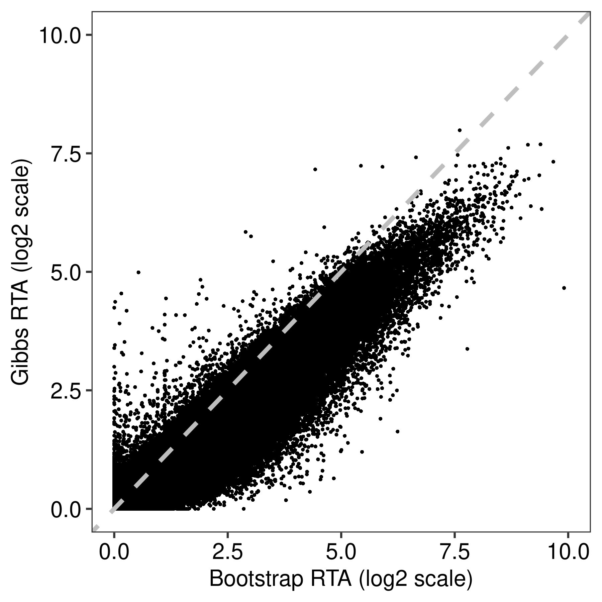
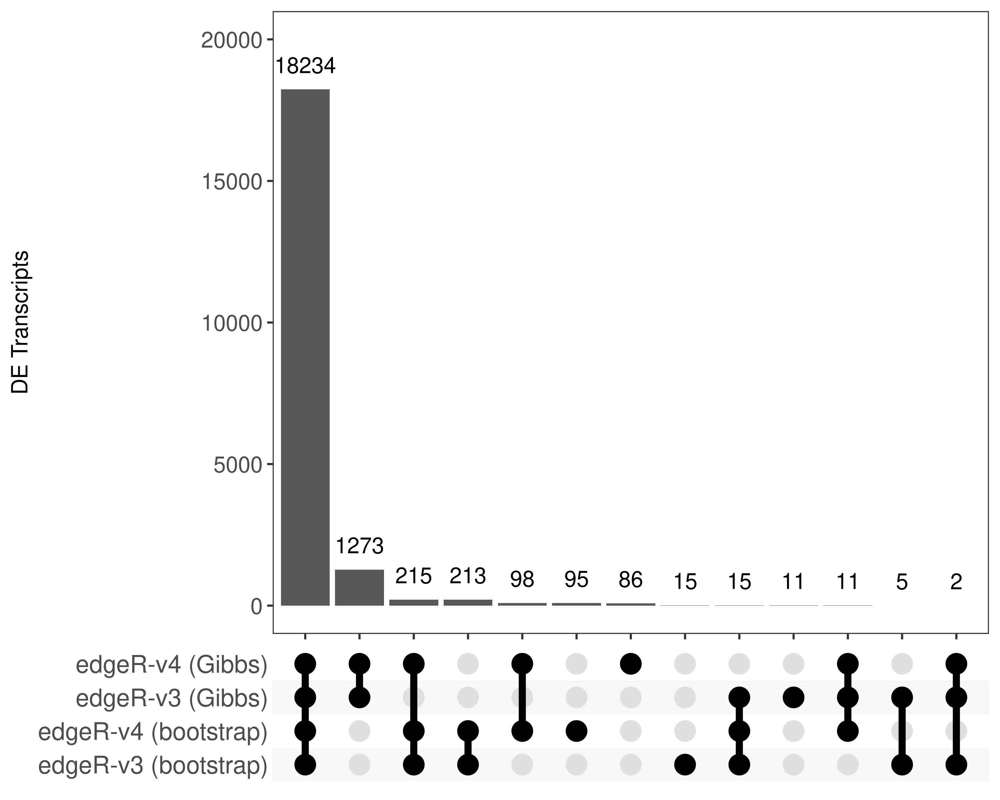
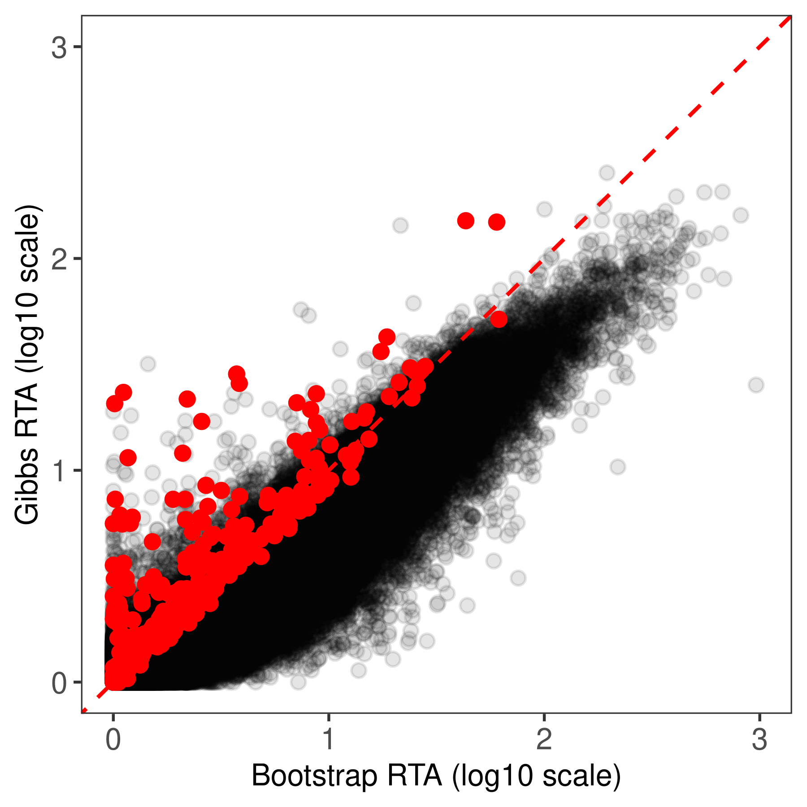
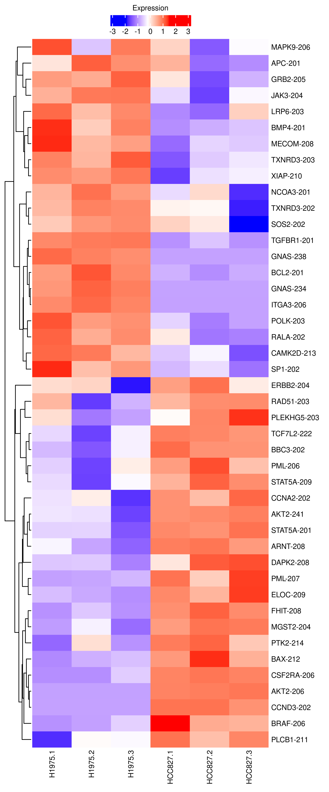

Last updated: 2024-10-09
Checks: 7 0
Knit directory: GibbsDTE-code/analysis/
This reproducible R Markdown analysis was created with workflowr (version 1.7.1). The Checks tab describes the reproducibility checks that were applied when the results were created. The Past versions tab lists the development history.
Great! Since the R Markdown file has been committed to the Git repository, you know the exact version of the code that produced these results.
Great job! The global environment was empty. Objects defined in the global environment can affect the analysis in your R Markdown file in unknown ways. For reproduciblity it’s best to always run the code in an empty environment.
The command set.seed(20231211) was run prior to running
the code in the R Markdown file. Setting a seed ensures that any results
that rely on randomness, e.g. subsampling or permutations, are
reproducible.
Great job! Recording the operating system, R version, and package versions is critical for reproducibility.
Nice! There were no cached chunks for this analysis, so you can be confident that you successfully produced the results during this run.
Great job! Using relative paths to the files within your workflowr project makes it easier to run your code on other machines.
Great! You are using Git for version control. Tracking code development and connecting the code version to the results is critical for reproducibility.
The results in this page were generated with repository version 529139f. See the Past versions tab to see a history of the changes made to the R Markdown and HTML files.
Note that you need to be careful to ensure that all relevant files for
the analysis have been committed to Git prior to generating the results
(you can use wflow_publish or
wflow_git_commit). workflowr only checks the R Markdown
file, but you know if there are other scripts or data files that it
depends on. Below is the status of the Git repository when the results
were generated:
Ignored files:
Ignored: .Rhistory
Ignored: .Rprofile
Ignored: .Rproj.user/
Ignored: .gitattributes
Ignored: .gitignore
Ignored: GibbsDTE-code.Rproj
Ignored: code/lung/data/slurm-10678225.out
Ignored: code/lung/index-subread/.RData
Ignored: code/lung/index-subread/buildindex.Rout
Ignored: code/lung/index-subread/slurm-15397947.out
Ignored: code/lung/index-subread/slurm-15397948.out
Ignored: code/lung/index-subread/slurm-15397949.out
Ignored: code/lung/index/slurm-10679764.out
Ignored: code/lung/index/slurm-10679768.out
Ignored: code/lung/index/slurm-10684814.out
Ignored: code/lung/kallisto/slurm-16121443.out
Ignored: code/lung/salmon/.RData
Ignored: code/lung/salmon/runWasabi.Rout
Ignored: code/lung/salmon/slurm-15257704.out
Ignored: code/lung/salmon/slurm-15397973.out
Ignored: code/lung/salmon/slurm-15887027.out
Ignored: code/lung/subread/.nextflow.log
Ignored: code/lung/subread/.nextflow/
Ignored: code/lung/subread/log/
Ignored: code/lung/subread/report.html
Ignored: code/lung/subread/slurm-15398003.out
Ignored: code/lung/subread/timeline.html
Ignored: code/lung/subread/trace-20240201-45121600.txt
Ignored: code/pkg/.Rbuildignore
Ignored: code/pkg/.Rhistory
Ignored: code/pkg/.Rproj.user/
Ignored: code/pkg/pkg.Rproj
Ignored: code/pkg/src/.gitignore
Ignored: code/pkg/src/RcppExports.o
Ignored: code/pkg/src/pkg.so
Ignored: code/pkg/src/rcpparma_hello_world.o
Ignored: code/simulation/.RData
Ignored: code/simulation/slurm-15466798.out
Ignored: code/simulation/slurm-15466799_1.out
Ignored: code/simulation/slurm-15466799_10.out
Ignored: code/simulation/slurm-15466799_100.out
Ignored: code/simulation/slurm-15466799_101.out
Ignored: code/simulation/slurm-15466799_102.out
Ignored: code/simulation/slurm-15466799_103.out
Ignored: code/simulation/slurm-15466799_104.out
Ignored: code/simulation/slurm-15466799_105.out
Ignored: code/simulation/slurm-15466799_106.out
Ignored: code/simulation/slurm-15466799_107.out
Ignored: code/simulation/slurm-15466799_108.out
Ignored: code/simulation/slurm-15466799_109.out
Ignored: code/simulation/slurm-15466799_11.out
Ignored: code/simulation/slurm-15466799_110.out
Ignored: code/simulation/slurm-15466799_111.out
Ignored: code/simulation/slurm-15466799_112.out
Ignored: code/simulation/slurm-15466799_113.out
Ignored: code/simulation/slurm-15466799_114.out
Ignored: code/simulation/slurm-15466799_115.out
Ignored: code/simulation/slurm-15466799_116.out
Ignored: code/simulation/slurm-15466799_117.out
Ignored: code/simulation/slurm-15466799_118.out
Ignored: code/simulation/slurm-15466799_119.out
Ignored: code/simulation/slurm-15466799_12.out
Ignored: code/simulation/slurm-15466799_120.out
Ignored: code/simulation/slurm-15466799_121.out
Ignored: code/simulation/slurm-15466799_122.out
Ignored: code/simulation/slurm-15466799_123.out
Ignored: code/simulation/slurm-15466799_124.out
Ignored: code/simulation/slurm-15466799_125.out
Ignored: code/simulation/slurm-15466799_126.out
Ignored: code/simulation/slurm-15466799_127.out
Ignored: code/simulation/slurm-15466799_128.out
Ignored: code/simulation/slurm-15466799_129.out
Ignored: code/simulation/slurm-15466799_13.out
Ignored: code/simulation/slurm-15466799_130.out
Ignored: code/simulation/slurm-15466799_131.out
Ignored: code/simulation/slurm-15466799_132.out
Ignored: code/simulation/slurm-15466799_133.out
Ignored: code/simulation/slurm-15466799_134.out
Ignored: code/simulation/slurm-15466799_135.out
Ignored: code/simulation/slurm-15466799_136.out
Ignored: code/simulation/slurm-15466799_137.out
Ignored: code/simulation/slurm-15466799_138.out
Ignored: code/simulation/slurm-15466799_139.out
Ignored: code/simulation/slurm-15466799_14.out
Ignored: code/simulation/slurm-15466799_140.out
Ignored: code/simulation/slurm-15466799_141.out
Ignored: code/simulation/slurm-15466799_142.out
Ignored: code/simulation/slurm-15466799_143.out
Ignored: code/simulation/slurm-15466799_144.out
Ignored: code/simulation/slurm-15466799_145.out
Ignored: code/simulation/slurm-15466799_146.out
Ignored: code/simulation/slurm-15466799_147.out
Ignored: code/simulation/slurm-15466799_148.out
Ignored: code/simulation/slurm-15466799_149.out
Ignored: code/simulation/slurm-15466799_15.out
Ignored: code/simulation/slurm-15466799_150.out
Ignored: code/simulation/slurm-15466799_151.out
Ignored: code/simulation/slurm-15466799_152.out
Ignored: code/simulation/slurm-15466799_153.out
Ignored: code/simulation/slurm-15466799_154.out
Ignored: code/simulation/slurm-15466799_155.out
Ignored: code/simulation/slurm-15466799_156.out
Ignored: code/simulation/slurm-15466799_157.out
Ignored: code/simulation/slurm-15466799_158.out
Ignored: code/simulation/slurm-15466799_159.out
Ignored: code/simulation/slurm-15466799_16.out
Ignored: code/simulation/slurm-15466799_160.out
Ignored: code/simulation/slurm-15466799_161.out
Ignored: code/simulation/slurm-15466799_162.out
Ignored: code/simulation/slurm-15466799_163.out
Ignored: code/simulation/slurm-15466799_164.out
Ignored: code/simulation/slurm-15466799_165.out
Ignored: code/simulation/slurm-15466799_166.out
Ignored: code/simulation/slurm-15466799_167.out
Ignored: code/simulation/slurm-15466799_168.out
Ignored: code/simulation/slurm-15466799_169.out
Ignored: code/simulation/slurm-15466799_17.out
Ignored: code/simulation/slurm-15466799_170.out
Ignored: code/simulation/slurm-15466799_171.out
Ignored: code/simulation/slurm-15466799_172.out
Ignored: code/simulation/slurm-15466799_173.out
Ignored: code/simulation/slurm-15466799_174.out
Ignored: code/simulation/slurm-15466799_175.out
Ignored: code/simulation/slurm-15466799_176.out
Ignored: code/simulation/slurm-15466799_177.out
Ignored: code/simulation/slurm-15466799_178.out
Ignored: code/simulation/slurm-15466799_179.out
Ignored: code/simulation/slurm-15466799_18.out
Ignored: code/simulation/slurm-15466799_180.out
Ignored: code/simulation/slurm-15466799_181.out
Ignored: code/simulation/slurm-15466799_182.out
Ignored: code/simulation/slurm-15466799_183.out
Ignored: code/simulation/slurm-15466799_184.out
Ignored: code/simulation/slurm-15466799_185.out
Ignored: code/simulation/slurm-15466799_186.out
Ignored: code/simulation/slurm-15466799_187.out
Ignored: code/simulation/slurm-15466799_188.out
Ignored: code/simulation/slurm-15466799_189.out
Ignored: code/simulation/slurm-15466799_19.out
Ignored: code/simulation/slurm-15466799_190.out
Ignored: code/simulation/slurm-15466799_191.out
Ignored: code/simulation/slurm-15466799_192.out
Ignored: code/simulation/slurm-15466799_193.out
Ignored: code/simulation/slurm-15466799_194.out
Ignored: code/simulation/slurm-15466799_195.out
Ignored: code/simulation/slurm-15466799_196.out
Ignored: code/simulation/slurm-15466799_197.out
Ignored: code/simulation/slurm-15466799_198.out
Ignored: code/simulation/slurm-15466799_199.out
Ignored: code/simulation/slurm-15466799_2.out
Ignored: code/simulation/slurm-15466799_20.out
Ignored: code/simulation/slurm-15466799_200.out
Ignored: code/simulation/slurm-15466799_21.out
Ignored: code/simulation/slurm-15466799_22.out
Ignored: code/simulation/slurm-15466799_23.out
Ignored: code/simulation/slurm-15466799_24.out
Ignored: code/simulation/slurm-15466799_25.out
Ignored: code/simulation/slurm-15466799_26.out
Ignored: code/simulation/slurm-15466799_27.out
Ignored: code/simulation/slurm-15466799_28.out
Ignored: code/simulation/slurm-15466799_29.out
Ignored: code/simulation/slurm-15466799_3.out
Ignored: code/simulation/slurm-15466799_30.out
Ignored: code/simulation/slurm-15466799_31.out
Ignored: code/simulation/slurm-15466799_32.out
Ignored: code/simulation/slurm-15466799_33.out
Ignored: code/simulation/slurm-15466799_34.out
Ignored: code/simulation/slurm-15466799_35.out
Ignored: code/simulation/slurm-15466799_36.out
Ignored: code/simulation/slurm-15466799_37.out
Ignored: code/simulation/slurm-15466799_38.out
Ignored: code/simulation/slurm-15466799_39.out
Ignored: code/simulation/slurm-15466799_4.out
Ignored: code/simulation/slurm-15466799_40.out
Ignored: code/simulation/slurm-15466799_41.out
Ignored: code/simulation/slurm-15466799_42.out
Ignored: code/simulation/slurm-15466799_43.out
Ignored: code/simulation/slurm-15466799_44.out
Ignored: code/simulation/slurm-15466799_45.out
Ignored: code/simulation/slurm-15466799_46.out
Ignored: code/simulation/slurm-15466799_47.out
Ignored: code/simulation/slurm-15466799_48.out
Ignored: code/simulation/slurm-15466799_49.out
Ignored: code/simulation/slurm-15466799_5.out
Ignored: code/simulation/slurm-15466799_50.out
Ignored: code/simulation/slurm-15466799_51.out
Ignored: code/simulation/slurm-15466799_52.out
Ignored: code/simulation/slurm-15466799_53.out
Ignored: code/simulation/slurm-15466799_54.out
Ignored: code/simulation/slurm-15466799_55.out
Ignored: code/simulation/slurm-15466799_56.out
Ignored: code/simulation/slurm-15466799_57.out
Ignored: code/simulation/slurm-15466799_58.out
Ignored: code/simulation/slurm-15466799_59.out
Ignored: code/simulation/slurm-15466799_6.out
Ignored: code/simulation/slurm-15466799_60.out
Ignored: code/simulation/slurm-15466799_61.out
Ignored: code/simulation/slurm-15466799_62.out
Ignored: code/simulation/slurm-15466799_63.out
Ignored: code/simulation/slurm-15466799_64.out
Ignored: code/simulation/slurm-15466799_65.out
Ignored: code/simulation/slurm-15466799_66.out
Ignored: code/simulation/slurm-15466799_67.out
Ignored: code/simulation/slurm-15466799_68.out
Ignored: code/simulation/slurm-15466799_69.out
Ignored: code/simulation/slurm-15466799_7.out
Ignored: code/simulation/slurm-15466799_70.out
Ignored: code/simulation/slurm-15466799_71.out
Ignored: code/simulation/slurm-15466799_72.out
Ignored: code/simulation/slurm-15466799_73.out
Ignored: code/simulation/slurm-15466799_74.out
Ignored: code/simulation/slurm-15466799_75.out
Ignored: code/simulation/slurm-15466799_76.out
Ignored: code/simulation/slurm-15466799_77.out
Ignored: code/simulation/slurm-15466799_78.out
Ignored: code/simulation/slurm-15466799_79.out
Ignored: code/simulation/slurm-15466799_8.out
Ignored: code/simulation/slurm-15466799_80.out
Ignored: code/simulation/slurm-15466799_81.out
Ignored: code/simulation/slurm-15466799_82.out
Ignored: code/simulation/slurm-15466799_83.out
Ignored: code/simulation/slurm-15466799_84.out
Ignored: code/simulation/slurm-15466799_85.out
Ignored: code/simulation/slurm-15466799_86.out
Ignored: code/simulation/slurm-15466799_87.out
Ignored: code/simulation/slurm-15466799_88.out
Ignored: code/simulation/slurm-15466799_89.out
Ignored: code/simulation/slurm-15466799_9.out
Ignored: code/simulation/slurm-15466799_90.out
Ignored: code/simulation/slurm-15466799_91.out
Ignored: code/simulation/slurm-15466799_92.out
Ignored: code/simulation/slurm-15466799_93.out
Ignored: code/simulation/slurm-15466799_94.out
Ignored: code/simulation/slurm-15466799_95.out
Ignored: code/simulation/slurm-15466799_96.out
Ignored: code/simulation/slurm-15466799_97.out
Ignored: code/simulation/slurm-15466799_98.out
Ignored: code/simulation/slurm-15466799_99.out
Ignored: code/simulation/slurm-15478249_201.out
Ignored: code/simulation/slurm-15478249_202.out
Ignored: code/simulation/slurm-15478249_203.out
Ignored: code/simulation/slurm-15478249_204.out
Ignored: code/simulation/slurm-15478249_205.out
Ignored: code/simulation/slurm-15478249_206.out
Ignored: code/simulation/slurm-15478249_207.out
Ignored: code/simulation/slurm-15478249_208.out
Ignored: code/simulation/slurm-15478249_209.out
Ignored: code/simulation/slurm-15478249_210.out
Ignored: code/simulation/slurm-15478249_211.out
Ignored: code/simulation/slurm-15478249_212.out
Ignored: code/simulation/slurm-15478249_213.out
Ignored: code/simulation/slurm-15478249_214.out
Ignored: code/simulation/slurm-15478249_215.out
Ignored: code/simulation/slurm-15478249_216.out
Ignored: code/simulation/slurm-15478249_217.out
Ignored: code/simulation/slurm-15478249_218.out
Ignored: code/simulation/slurm-15478249_219.out
Ignored: code/simulation/slurm-15478249_220.out
Ignored: code/simulation/slurm-15478249_221.out
Ignored: code/simulation/slurm-15478249_222.out
Ignored: code/simulation/slurm-15478249_223.out
Ignored: code/simulation/slurm-15478249_224.out
Ignored: code/simulation/slurm-15478249_225.out
Ignored: code/simulation/slurm-15478249_226.out
Ignored: code/simulation/slurm-15478249_227.out
Ignored: code/simulation/slurm-15478249_228.out
Ignored: code/simulation/slurm-15478249_229.out
Ignored: code/simulation/slurm-15478249_230.out
Ignored: code/simulation/slurm-15478249_231.out
Ignored: code/simulation/slurm-15478249_232.out
Ignored: code/simulation/slurm-15478249_233.out
Ignored: code/simulation/slurm-15478249_234.out
Ignored: code/simulation/slurm-15478249_235.out
Ignored: code/simulation/slurm-15478249_236.out
Ignored: code/simulation/slurm-15478249_237.out
Ignored: code/simulation/slurm-15478249_238.out
Ignored: code/simulation/slurm-15478249_239.out
Ignored: code/simulation/slurm-15478249_240.out
Ignored: code/simulation/slurm-15530400.out
Ignored: code/simulation/summarize.Rout
Ignored: data/annotation/hg38/gencode.v33.annotation.gtf.gz
Ignored: data/annotation/mm39/
Ignored: data/lung-ont/220928_dge.rds
Ignored: data/lung/fastq/
Ignored: data/lung/index-kallisto/
Ignored: data/lung/index-subread/
Ignored: data/lung/index/
Ignored: ignore/
Ignored: misc/
Ignored: output/lung/
Ignored: output/simulation/
Untracked files:
Untracked: code/simulation-large/
Untracked: output/simulation-large/
Untracked: renv.lock
Untracked: renv/
Unstaged changes:
Modified: code/pkg/R/simulation-quant.R
Modified: code/pkg/R/simulation-summary.R
Modified: code/pkg/R/simulation-utils.R
Modified: code/pkg/R/simulation.R
Note that any generated files, e.g. HTML, png, CSS, etc., are not included in this status report because it is ok for generated content to have uncommitted changes.
These are the previous versions of the repository in which changes were
made to the R Markdown (analysis/lung.Rmd) and HTML
(docs/lung.html) files. If you’ve configured a remote Git
repository (see ?wflow_git_remote), click on the hyperlinks
in the table below to view the files as they were in that past version.
| File | Version | Author | Date | Message |
|---|---|---|---|---|
| Rmd | 529139f | Pedro Baldoni | 2024-10-09 | NARGAB Revision from October 2024 |
| html | d9b6403 | Pedro Baldoni | 2024-06-24 | Build site. |
| Rmd | ea90058 | Pedro Baldoni | 2024-06-24 | Printing out coverage plots |
| html | 70ab63f | Pedro Baldoni | 2024-04-05 | Publishing workflowr |
| Rmd | 531a9f8 | Pedro Baldoni | 2024-04-05 | Turning cat off |
| Rmd | afc521e | Pedro Baldoni | 2024-04-05 | Adding case study dataset Rmd |
This Rmarkdown generates Figures 1, 2, and 5 from our main paper as well as Supplementary Figures S1–S3 and S10 from the supplement. The results are based on the analysis of the human lung cancer cell lines dataset, although Supplementary Figure S3 include data from our small-scale simulated data.
Below we set options for this Rmarkdown report and load the necessary libraries.
knitr::opts_chunk$set(dev = "png",
dpi = 300,
dev.args = list(type = "cairo-png"),
root.dir = '.',
autodep = TRUE)
options(knitr.kable.NA = "-")library(knitr)
library(data.table)
library(ComplexHeatmap)
library(AnnotationHub)
library(ggplot2)
library(ggupset)
library(edgeR)
library(patchwork)
library(rtracklayer)
library(magrittr)
library(Gviz)
library(png)
library(csaw)
library(lubridate)
library(BiocParallel)
devtools::load_all('../code/pkg')Next we set the paths to our pre-processed data as well as to one of our simulated experiment.
path.misc <- file.path('../misc/lung.Rmd')
dir.create(path.misc,recursive = TRUE,showWarnings = FALSE)
path.lung <- "../output/lung"
path.bam <- '../output/lung/subread/alignment'
path.sim <-
file.path('../output/simulation/data/mm39/readlen-100/fc2',
'paired-end/9999TxPerGene/unbalanced/5libsPerGroup/simulation-1/')Below I specify some parameters that are used in this report. Specifically, I register a back-end to be used for parallel processing.
bs <- 8
bseq <- seq(10,100,10)
BPPARAM <- BiocParallel::MulticoreParam(workers = 10,progressbar = TRUE)
register(BPPARAM)Below I load the transcriptome annotation used in this analysis. I
use AnnotationHub for that purpose.
ah <- AnnotationHub()
edb <- ah[['AH78783']] # Ensembl version 99 relative to Gencode version 33loading from cacherequire("ensembldb")edb.names <- c("TXIDVERSION","SYMBOL","TXBIOTYPE",
"GENEIDVERSION","GENENAME","GENEBIOTYPE","ENTREZID")
dt.anno <- as.data.table(select(edb,keys(edb),edb.names))
dt.anno.gene <-
dt.anno[,.(NTranscriptPerGene = .N),
by = c('GENEIDVERSION','GENEBIOTYPE','ENTREZID','GENENAME')]
dt.anno.gene[,GeneOfInterest :=
GENEBIOTYPE %in% c('protein_coding','lncRNA') & !is.na(ENTREZID)]Some transcriptome information is easily obtained from the GTF file
of the annotation. Below I import such a file with
rtracklayer.
gr <- import("../data/annotation/hg38/gencode.v33.annotation.gtf.gz")
gr$EntrezID <- dt.anno$ENTREZID[match(gr$transcript_id,dt.anno$TXIDVERSION)]
gr.tx <- gr[gr$type == 'transcript']Then, I load the quantification results obtained with Salmon and Gibbs sampling.
cs.gibbs <-
catchSalmon(list.dirs(file.path(path.lung,'salmon-gibbs'),recursive = FALSE))Reading ../output/lung/salmon-gibbs/GSM5255695, 227223 transcripts, 100 gibbs samples
Reading ../output/lung/salmon-gibbs/GSM5255696, 227223 transcripts, 100 gibbs samples
Reading ../output/lung/salmon-gibbs/GSM5255697, 227223 transcripts, 100 gibbs samples
Reading ../output/lung/salmon-gibbs/GSM5255704, 227223 transcripts, 100 gibbs samples
Reading ../output/lung/salmon-gibbs/GSM5255705, 227223 transcripts, 100 gibbs samples
Reading ../output/lung/salmon-gibbs/GSM5255706, 227223 transcripts, 100 gibbs samplescs.gibbs$counts <-
cs.gibbs$counts[grepl("ENST",rownames(cs.gibbs$counts)),]
cs.gibbs$annotation <-
cs.gibbs$annotation[grepl("ENST",rownames(cs.gibbs$annotation)),]
rownames(cs.gibbs$counts) <-
rownames(cs.gibbs$annotation) <- strsplit2(rownames(cs.gibbs$counts),"\\|")[,1]
colnames(cs.gibbs$counts) <- basename(colnames(cs.gibbs$counts))
cs.gibbs$annotation$TranscriptSymbol <-
gr.tx$transcript_name[match(rownames(cs.gibbs$annotation),gr.tx$transcript_id)]
cs.gibbs$annotation$EntrezID <-
dt.anno$ENTREZID[match(rownames(cs.gibbs$annotation),dt.anno$TXIDVERSION)]
cs.gibbs$annotation$GeneID <-
dt.anno$GENEIDVERSION[match(rownames(cs.gibbs$annotation),dt.anno$TXIDVERSION)]
cs.gibbs$annotation$GeneOfInterest <-
dt.anno.gene$GeneOfInterest[match(cs.gibbs$annotation$GeneID,dt.anno.gene$GENEIDVERSION)]Similarly, I load the quantification results obtained with Salmon and bootstrap sampling.
cs.boot <-
catchSalmon(list.dirs(file.path(path.lung,'salmon-bootstrap/'),recursive = FALSE))Reading ../output/lung/salmon-bootstrap//GSM5255695, 227223 transcripts, 100 bootstrap samples
Reading ../output/lung/salmon-bootstrap//GSM5255696, 227223 transcripts, 100 bootstrap samples
Reading ../output/lung/salmon-bootstrap//GSM5255697, 227223 transcripts, 100 bootstrap samples
Reading ../output/lung/salmon-bootstrap//GSM5255704, 227223 transcripts, 100 bootstrap samples
Reading ../output/lung/salmon-bootstrap//GSM5255705, 227223 transcripts, 100 bootstrap samples
Reading ../output/lung/salmon-bootstrap//GSM5255706, 227223 transcripts, 100 bootstrap samplescs.boot$counts <- cs.boot$counts[grepl("ENST",rownames(cs.boot$counts)),]
cs.boot$annotation <-
cs.boot$annotation[grepl("ENST",rownames(cs.boot$annotation)),]
rownames(cs.boot$counts) <-
rownames(cs.boot$annotation) <- strsplit2(rownames(cs.boot$counts),"\\|")[,1]
colnames(cs.boot$counts) <-
basename(colnames(cs.boot$counts))
cs.boot$annotation$TranscriptSymbol <-
gr.tx$transcript_name[match(rownames(cs.boot$annotation),gr.tx$transcript_id)]
cs.boot$annotation$EntrezID <-
dt.anno$ENTREZID[match(rownames(cs.boot$annotation),dt.anno$TXIDVERSION)]
cs.boot$annotation$GeneID <-
dt.anno$GENEIDVERSION[match(rownames(cs.boot$annotation),dt.anno$TXIDVERSION)]
cs.boot$annotation$GeneOfInterest <-
dt.anno.gene$GeneOfInterest[match(cs.boot$annotation$GeneID,dt.anno.gene$GENEIDVERSION)]Finally, I load the quantification results obtained with kallisto.
cs.kallisto <-
catchKallisto(list.dirs(file.path(path.lung,'kallisto/'),recursive = FALSE))Reading ../output/lung/kallisto//GSM5255695, 228072 transcripts, 100 bootstraps
Reading ../output/lung/kallisto//GSM5255696, 228072 transcripts, 100 bootstraps
Reading ../output/lung/kallisto//GSM5255697, 228072 transcripts, 100 bootstraps
Reading ../output/lung/kallisto//GSM5255704, 228072 transcripts, 100 bootstraps
Reading ../output/lung/kallisto//GSM5255705, 228072 transcripts, 100 bootstraps
Reading ../output/lung/kallisto//GSM5255706, 228072 transcripts, 100 bootstrapscs.kallisto$counts <- cs.kallisto$counts[grepl("ENST",rownames(cs.kallisto$counts)),]
cs.kallisto$annotation <-
cs.kallisto$annotation[grepl("ENST",rownames(cs.kallisto$annotation)),]
rownames(cs.kallisto$counts) <-
rownames(cs.kallisto$annotation) <- strsplit2(rownames(cs.kallisto$counts),"\\|")[,1]
colnames(cs.kallisto$counts) <-
basename(colnames(cs.kallisto$counts))
cs.kallisto$annotation$TranscriptSymbol <-
gr.tx$transcript_name[match(rownames(cs.kallisto$annotation),gr.tx$transcript_id)]
cs.kallisto$annotation$EntrezID <-
dt.anno$ENTREZID[match(rownames(cs.kallisto$annotation),dt.anno$TXIDVERSION)]
cs.kallisto$annotation$GeneID <-
dt.anno$GENEIDVERSION[match(rownames(cs.kallisto$annotation),dt.anno$TXIDVERSION)]
cs.kallisto$annotation$GeneOfInterest <-
dt.anno.gene$GeneOfInterest[match(cs.kallisto$annotation$GeneID,dt.anno.gene$GENEIDVERSION)]
cs.kallisto$counts <- cs.kallisto$counts[match(rownames(cs.gibbs$counts),rownames(cs.kallisto$counts)),]
cs.kallisto$annotation <- cs.kallisto$annotation[match(rownames(cs.gibbs$annotation),rownames(cs.kallisto$annotation)),]Below I load the targets metadata file of the RNA-seq experiment, with contain information about the cell line of origin of each RNA-seq library.
targets <- read.delim('../data/lung/misc/targets.txt')
targets$GSM <- strsplit2(targets$File1,"_")[,1]
targets <- targets[match(basename(colnames(cs.gibbs$counts)),targets$GSM),]Then I create DGEList objects to facilitate downstream
analyses.
dte.raw <- DGEList(counts = cs.gibbs$counts,
samples = targets,
genes = cs.gibbs$annotation)
dte.raw$samples$group <- dte.raw$samples$Group
dte.gibbs <- DGEList(counts = cs.gibbs$counts/cs.gibbs$annotation$Overdispersion,
samples = targets,
genes = cs.gibbs$annotation)
dte.gibbs$samples$group <- dte.gibbs$samples$Group
dte.boot <- DGEList(counts = cs.boot$counts/cs.boot$annotation$Overdispersion,
samples = targets,
genes = cs.boot$annotation)
dte.boot$samples$group <- dte.boot$samples$Group
dte.kallisto <- DGEList(counts = cs.kallisto$counts/cs.kallisto$annotation$Overdispersion,
samples = targets,
genes = cs.kallisto$annotation)
dte.kallisto$samples$group <- dte.kallisto$samples$GroupTo obtain the quantification time from Salmon, I look into the SLURM log output file.
log.salmon <- readLines('../code/lung/salmon/slurm-15887027.out')
log.salmon.boot <- log.salmon[grepl("Timestamp Bootstrap",log.salmon)] %>%
strsplit2(.," ") %>%
as.data.table()
log.salmon.gibbs <- log.salmon[grepl("Timestamp Gibbs",log.salmon)] %>%
strsplit2(.," ") %>%
as.data.table()
log.salmon.boot[,Diff := dmy_hms(paste(gsub("/","-",V8),V9)) - dmy_hms(paste(gsub("/","-",V5),V6))]
log.salmon.gibbs[,Diff := dmy_hms(paste(gsub("/","-",V8),V9)) - dmy_hms(paste(gsub("/","-",V5),V6))]
log.salmon.boot$DiffTime differences in mins
[1] 19.16667 20.10000 18.25000 18.33333 37.96667 17.45000log.salmon.gibbs$DiffTime differences in mins
[1] 3.800000 4.300000 3.633333 4.016667 13.333333 3.616667mean(log.salmon.boot$Diff)Time difference of 21.87778 minsmean(log.salmon.gibbs$Diff)Time difference of 5.45 minsI do the same with kallisto.
log.kallisto <- readLines('../code/lung/kallisto/slurm-16121443.out')
log.kallisto.boot <- log.kallisto[grepl("Timestamp Bootstrap",log.kallisto)] %>%
strsplit2(.," ") %>%
as.data.table()
log.kallisto.boot[,Diff := dmy_hms(paste(gsub("/","-",V8),V9)) - dmy_hms(paste(gsub("/","-",V5),V6))]
log.kallisto.boot$DiffTime differences in mins
[1] 11.416667 11.533333 9.750000 10.316667 20.150000 8.633333mean(log.kallisto.boot$Diff)Time difference of 11.96667 minsNow we begin with the DTE analysis.
We start by filtering out low expressed transcripts and transcripts belonging to uninteresting genes, i.e. those that are not protein-coding or lncRNA genes.
keep.raw <-
filterByExpr(dte.raw) &
(dte.raw$genes$GeneOfInterest == TRUE)
keep.gibbs <-
filterByExpr(dte.gibbs) &
(dte.gibbs$genes$GeneOfInterest == TRUE)
keep.boot <-
filterByExpr(dte.boot) &
(dte.gibbs$genes$GeneOfInterest == TRUE)
keep.kallisto <-
filterByExpr(dte.kallisto) &
(dte.gibbs$genes$GeneOfInterest == TRUE)
table(keep.gibbs,keep.boot) keep.boot
keep.gibbs FALSE TRUE
FALSE 197289 207
TRUE 2355 27212table(keep.gibbs,keep.kallisto) keep.kallisto
keep.gibbs FALSE TRUE
FALSE 195407 2089
TRUE 2033 27534dte.gibbs$genes$inBoot <- keep.boot
dte.boot$genes$inGibbs <- keep.gibbs
dte.kallisto$genes$inGibbs <- keep.gibbs
dte.raw.filtr <- dte.raw[keep.raw,,keep.lib.sizes = FALSE]
dte.gibbs.filtr <- dte.gibbs[keep.gibbs,,keep.lib.sizes = FALSE]
dte.boot.filtr <- dte.boot[keep.boot,,keep.lib.sizes = FALSE]
dte.kallisto.filtr <- dte.kallisto[keep.kallisto,,keep.lib.sizes = FALSE]We apply TMM normalization to remove RNA composition biases.
dte.raw.filtr <- normLibSizes(dte.raw.filtr)
dte.raw.filtr$samples$norm.factors[1] 1.0818961 1.1109908 1.1021386 0.9612946 0.8559130 0.9174484dte.gibbs.filtr <- normLibSizes(dte.gibbs.filtr)
dte.gibbs.filtr$samples$norm.factors[1] 1.1091013 1.1313574 1.1300533 0.9419848 0.8378197 0.8935843dte.boot.filtr <- normLibSizes(dte.boot.filtr)
dte.boot.filtr$samples$norm.factors[1] 1.1080927 1.1315317 1.1307586 0.9412070 0.8382824 0.8939470dte.kallisto.filtr <- normLibSizes(dte.kallisto.filtr)
dte.kallisto.filtr$samples$norm.factors[1] 1.1118764 1.1360119 1.1301173 0.9448906 0.8345998 0.8883360In the set of code chunks below I compare bootstrap- and Gibbs-based RTA estimates. These plots are used to generate Figure 1 of the main paper as well as Supplementary Figure 1.
I start by organizing the data into a single data.table object.
isExpr <- rowSums(dte.gibbs$counts) > 0
dt.scatter <- data.table(TranscriptID = rownames(dte.gibbs)[isExpr],
TranscriptSymbol = dte.gibbs$genes$TranscriptSymbol[isExpr],
EntrezID = dte.gibbs$genes$EntrezID[isExpr],
GeneID = dte.gibbs$genes$GeneID[isExpr],
Kallisto.Bootstrap = dte.kallisto$genes$Overdispersion[isExpr],
Salmon.Bootstrap = dte.boot$genes$Overdispersion[isExpr],
Salmon.Gibbs = dte.gibbs$genes$Overdispersion[isExpr],
Expr.Kallisto.Boot = aveLogCPM(dte.kallisto[isExpr,]),
Expr.Salmon.Boot = aveLogCPM(dte.boot[isExpr,]),
Expr.Salmon.Gibbs = aveLogCPM(dte.gibbs[isExpr,]))
dt.scatter[,NTx := .N,by = 'GeneID']
dt.scatter <- dt.scatter[grepl("ENST",TranscriptID),]
dt.scatter[,gibbs.salmon.boot.fit := .(loessFit(x = log2(Salmon.Bootstrap),
y = log2(Salmon.Gibbs))$fitted)]
dt.scatter[,fc.expr.salmon.fit := .(loessFit(x = Expr.Salmon.Gibbs,
y = log2(Salmon.Bootstrap/Salmon.Gibbs))$fitted)]
dt.scatter[,gibbs.kallisto.boot.fit := .(loessFit(x = log2(Kallisto.Bootstrap),
y = log2(Salmon.Gibbs))$fitted)]
dt.scatter[,fc.expr.kallisto.fit := .(loessFit(x = Expr.Salmon.Gibbs,
y = log2(Kallisto.Bootstrap/Salmon.Gibbs))$fitted)]Below I generate panel (a) of Figure 1.
fig.scatter.salmon <- ggplot(data = dt.scatter,aes(x = log2(Salmon.Bootstrap))) +
geom_point(alpha = 1,shape = 16,size = 0.3,aes(y = log2(Salmon.Gibbs))) +
geom_abline(intercept = 0,slope = 1,color = 'gray',linetype = 'dashed',linewidth = 0.75) +
scale_y_continuous(limits = c(0,10)) +
scale_x_continuous(limits = c(0,10)) +
labs(x = 'Bootstrap RTA (log2 scale)',y = 'Gibbs RTA (log2 scale)')+
theme_bw(base_size = bs,base_family = 'sans') +
theme(panel.grid = element_blank(),
axis.text = element_text(colour = 'black',size = bs),
axis.title = element_text(colour = 'black',size = bs))
fig.scatter.salmon
| Version | Author | Date |
|---|---|---|
| 70ab63f | Pedro Baldoni | 2024-04-05 |
Below are some summary statistics reported in our paper.
dt.scatter[,summary(Kallisto.Bootstrap/Salmon.Gibbs)] Min. 1st Qu. Median Mean 3rd Qu. Max.
0.01096 0.95873 1.07933 1.20666 1.31906 27.08896 dt.scatter[,summary(Salmon.Bootstrap/Salmon.Gibbs)] Min. 1st Qu. Median Mean 3rd Qu. Max.
0.04562 1.00397 1.15177 1.43484 1.57473 38.06237 dt.scatter[,table(Expr.Salmon.Gibbs <= 1)]
FALSE TRUE
18764 119024 dt.scatter[,table(Expr.Salmon.Gibbs <= 1)/.N]
FALSE TRUE
0.1361802 0.8638198 dt.scatter[Expr.Salmon.Gibbs <= 1,summary(Kallisto.Bootstrap/Salmon.Gibbs)] Min. 1st Qu. Median Mean 3rd Qu. Max.
0.01096 0.96997 1.10191 1.23322 1.36242 25.63485 dt.scatter[Expr.Salmon.Gibbs <= 1,summary(Salmon.Bootstrap/Salmon.Gibbs)] Min. 1st Qu. Median Mean 3rd Qu. Max.
0.04562 1.02251 1.20356 1.49783 1.69422 38.06237 dt.scatter[Expr.Salmon.Gibbs >1,summary(Kallisto.Bootstrap/Salmon.Gibbs)] Min. 1st Qu. Median Mean 3rd Qu. Max.
0.1176 0.9140 1.0000 1.0382 1.1030 27.0890 dt.scatter[Expr.Salmon.Gibbs >1,summary(Salmon.Bootstrap/Salmon.Gibbs)] Min. 1st Qu. Median Mean 3rd Qu. Max.
0.09213 0.95359 1.01712 1.03524 1.09383 5.11494 Then, I generate panel (b) of Figure 1.
dt.scatter[,Expr.Salmon.Gibbs.Cut := cut(x = Expr.Salmon.Gibbs,breaks = c(-Inf,-1,0,1,2,3:6,Inf))]
dt.scatter[,expr.salmon.boot.fit := .(loessFit(x = Expr.Salmon.Gibbs.Cut,y = log2(Salmon.Bootstrap),span = 0.8)$fitted)]
dt.scatter[,expr.salmon.gibbs.fit := .(loessFit(x = Expr.Salmon.Gibbs.Cut,y = log2(Salmon.Gibbs),span = 0.8)$fitted)]
dt.scatter.long <-
melt(dt.scatter,
id.vars = c('TranscriptID','Expr.Salmon.Gibbs.Cut','Expr.Salmon.Gibbs'),
measure.vars = c('Salmon.Bootstrap','Salmon.Gibbs'),
variable.name = 'Method',value.name = 'Value')
levels(dt.scatter.long$Method) <- c('Bootstrap','Gibbs')
fig.rtama.salmon.v2 <-
ggplot(data = dt.scatter.long,aes(x = Expr.Salmon.Gibbs.Cut,y = log2(Value))) +
geom_boxplot(aes(fill = Method),alpha = 0.5,col = 'black',coef = NULL,staplewidth = 1,linewidth = 0.25) +
scale_fill_manual(values = c('Bootstrap' = 'red','Gibbs' = 'blue')) +
labs(x = 'Average log2 CPM',y = 'RTA Overdispersion (log2 scale)') +
theme_bw(base_size = bs,base_family = 'sans') +
theme(panel.grid = element_blank(),
axis.text = element_text(colour = 'black', size = bs),
axis.title = element_text(colour = 'black',size = bs),
legend.title = element_blank(),
legend.position = 'inside',
legend.position.inside = c(0.85, 0.85),
legend.text = element_text(colour = 'black', size = bs),
legend.background = element_rect(fill = alpha("white", 0)))
fig.rtama.salmon.v2Finally, the code chunk below generates Supplementary Figure S1.
fig.kallisto.salmon <- ggplot(data = dt.scatter,aes(y = log2(Kallisto.Bootstrap),x = log2(Salmon.Bootstrap))) +
geom_point(alpha = 1,shape = 16,size = 0.3) +
geom_abline(intercept = 0,slope = 1,color = 'gray',linetype = 'dashed',linewidth = 0.75) +
scale_y_continuous(limits = c(0,10)) +
scale_x_continuous(limits = c(0,10)) +
labs(x = 'Salmon Bootstrap RTA (log2 scale)',y = 'kallisto Bootstrap RTA (log2 scale)')+
theme_bw(base_size = bs,base_family = 'sans') +
theme(panel.grid = element_blank(),
axis.text = element_text(colour = 'black',size = bs),
axis.title = element_text(colour = 'black',size = bs))
fig.kallisto.salmongibbs <- ggplot(data = dt.scatter,aes(y = log2(Kallisto.Bootstrap),x = log2(Salmon.Gibbs))) +
geom_point(alpha = 1,shape = 16,size = 0.3) +
geom_abline(intercept = 0,slope = 1,color = 'gray',linetype = 'dashed',linewidth = 0.75) +
scale_y_continuous(limits = c(0,10)) +
scale_x_continuous(limits = c(0,10)) +
labs(y = 'kallisto Bootstrap RTA (log2 scale)',x = 'Salmon Gibbs RTA (log2 scale)')+
theme_bw(base_size = bs,base_family = 'sans') +
theme(panel.grid = element_blank(),
axis.text = element_text(colour = 'black',size = bs),
axis.title = element_text(colour = 'black',size = bs))
fig.kallisto.salmonfig.kallisto.salmongibbsThe code chunks below generate a plot that was include in a previous version of Figure 1. I keep it here fore completeness.
alcpm <- dt.scatter$Expr.Salmon.Gibbs
names(alcpm) <- dt.scatter$TranscriptID
alcpm.cut <- cut(alcpm,breaks = c(-Inf, 1, Inf),
labels = c("Avg. Log CPM <= 1", "Avg. Log CPM > 1"))
names(alcpm.cut) <- names(alcpm)foo <- function(b){
cs.kallisto <-
catchKallisto2(paths = list.dirs(file.path(path.lung,'kallisto'),recursive = FALSE),
nboot.max = b)
cs.boot <-
catchSalmon2(paths = list.dirs(file.path(path.lung,'salmon-bootstrap'),recursive = FALSE),
nboot.max = b)
cs.gibbs <-
catchSalmon2(paths = list.dirs(file.path(path.lung,'salmon-gibbs'),recursive = FALSE),
nboot.max = b)
rownames(cs.kallisto$annotation) <- strsplit2(rownames(cs.kallisto$annotation),"\\|")[,1]
rownames(cs.boot$annotation) <- strsplit2(rownames(cs.boot$annotation),"\\|")[,1]
rownames(cs.gibbs$annotation) <- strsplit2(rownames(cs.gibbs$annotation),"\\|")[,1]
cs.kallisto$annotation <- cs.kallisto$annotation[match(rownames(cs.gibbs$annotation),rownames(cs.kallisto$annotation)),]
cs.kallisto$counts <- cs.kallisto$counts[match(rownames(cs.gibbs$counts),rownames(cs.kallisto$counts)),]
stopifnot(all.equal(rownames(cs.kallisto$annotation),rownames(cs.gibbs$annotation)))
stopifnot(all.equal(rownames(cs.boot$annotation),rownames(cs.gibbs$annotation)))
IsExpressed <- (rowSums(cs.gibbs$counts) > 0)
rn <- rownames(cs.gibbs$annotation)[IsExpressed]
rta <- data.table(ResamplingNum = b,
AveLogCPM = alcpm.cut[match(rn,names(alcpm.cut))],
TranscriptID = rn,
Kallisto.Boot = cs.kallisto$annotation$Overdispersion[IsExpressed],
Salmon.Boot = cs.boot$annotation$Overdispersion[IsExpressed],
Salmon.Gibbs = cs.gibbs$annotation$Overdispersion[IsExpressed])
rta <- rta[grepl("ENST",TranscriptID),]
return(rta)
}
rta.out <- lapply(bseq,foo)
df.rta <- rbindlist(rta.out)df.rta.reference <- df.rta[ResamplingNum == 100,c('TranscriptID','Kallisto.Boot','Salmon.Boot','Salmon.Gibbs')]
setnames(df.rta.reference,
old = c('Kallisto.Boot','Salmon.Boot','Salmon.Gibbs'),
new = c('Ref.Kallisto.Bootstrap','Ref.Salmon.Bootstrap','Ref.Salmon.Gibbs'))
df.rta <- merge(df.rta,df.rta.reference,all.x = TRUE,sort = FALSE,by = c('TranscriptID'))
df.rta$Kallisto.Bootstrap <- df.rta$Kallisto.Boot/df.rta$Ref.Kallisto.Bootstrap
df.rta$Salmon.Bootstrap <- df.rta$Salmon.Boot/df.rta$Ref.Salmon.Bootstrap
df.rta$Salmon.Gibbs <- df.rta$Salmon.Gibbs/df.rta$Ref.Salmon.Gibbs
df.rta.melt <- melt(df.rta,
id.vars = c('TranscriptID','ResamplingNum','AveLogCPM'),
measure.vars = c('Kallisto.Bootstrap','Salmon.Bootstrap','Salmon.Gibbs'),
value.name = 'Overdispersion',
variable.name = 'Type')
df.rta.melt$Type %<>% factor(levels = c('Kallisto.Bootstrap','Salmon.Bootstrap','Salmon.Gibbs'),
labels = c('kallisto-Bootstrap','Salmon-Bootstrap','Salmon-Gibbs'))
df.rta.melt$AveLogCPM %<>%
factor(levels = levels(.),labels = c("Average log2 CPM \u2264 1","Average log2 CPM > 1"))df.rta.melt.salmon <- df.rta.melt[Type != 'kallisto-Bootstrap',]
df.rta.melt.salmon$Type %<>%
droplevels() %<>%
factor(levels = levels(.),labels = c('Bootstrap','Gibbs'))
fig.resampling.salmon <-
ggplot(data = df.rta.melt.salmon,
aes(x = ResamplingNum,y = log2(Overdispersion))) +
facet_grid(cols = vars(Type),rows = vars(AveLogCPM)) +
geom_line(aes(group = TranscriptID),linewidth = 0.025,alpha = 1) +
geom_hline(yintercept = c(0),color = 'red',linetype = 'dashed',linewidth = 0.5) +
scale_x_continuous(breaks = seq(10,100,10)) +
theme_bw(base_size = bs,base_family = 'sans') +
theme(panel.grid = element_blank(),
axis.text = element_text(size = bs),
axis.title = element_text(size = bs),
strip.text = element_text(size = bs)) +
labs(x = 'Number of resamples', y = 'RTA log2 fold-change',color = NULL,fill = NULL)
fig.resampling.salmondf.rta.melt.kallisto <- df.rta.melt[Type != 'Salmon-Bootstrap',]
df.rta.melt.kallisto$Type %<>%
droplevels() %<>%
factor(levels = levels(.),labels = c('Bootstrap','Gibbs'))
fig.resampling.kallisto <-
ggplot(data = df.rta.melt.kallisto[Type != 'Salmon-Bootstrap',],
aes(x = ResamplingNum,y = log2(Overdispersion))) +
facet_grid(cols = vars(Type),rows = vars(AveLogCPM)) +
geom_line(aes(group = TranscriptID),linewidth = 0.025,alpha = 1) +
geom_hline(yintercept = c(0),color = 'red',linetype = 'dashed',linewidth = 0.5) +
scale_x_continuous(breaks = seq(10,100,10)) +
theme_bw(base_size = bs,base_family = 'sans') +
theme(panel.grid = element_blank(),
axis.text = element_text(size = bs),
axis.title = element_text(size = bs),
strip.text = element_text(size = bs)) +
labs(x = 'Number of resamples', y = 'RTA log2 fold-change',color = NULL,fill = NULL)
fig.resampling.kallistoNow we begin with the actual DTE analysis. I run all four pipelines in the code chunk below.
design <- model.matrix(~group,data = dte.boot$samples)
dte.raw.filtr.legacy <- estimateDisp(dte.raw.filtr,design = design)
dte.boot.filtr.legacy <- estimateDisp(dte.boot.filtr,design = design)
dte.gibbs.filtr.legacy <- estimateDisp(dte.gibbs.filtr,design = design)
fit.boot.edgeR.legacy <- glmQLFit(dte.boot.filtr.legacy,design = design,legacy = TRUE)
fit.gibbs.edgeR.legacy <- glmQLFit(dte.gibbs.filtr.legacy,design = design,legacy = TRUE)
fit.boot.edgeR.v4 <- glmQLFit(dte.boot.filtr,design,legacy = FALSE)
fit.gibbs.edgeR.v4 <- glmQLFit(dte.gibbs.filtr,design,legacy = FALSE)
qlf.boot.edgeR.legacy <- glmQLFTest(fit.boot.edgeR.legacy,coef = 2)
qlf.gibbs.edgeR.legacy <- glmQLFTest(fit.gibbs.edgeR.legacy,coef = 2)
qlf.boot.edgeR.v4 <- glmQLFTest(fit.boot.edgeR.v4,coef = 2)
qlf.gibbs.edgeR.v4 <- glmQLFTest(fit.gibbs.edgeR.v4,coef = 2)
out.boot.edgeR.legacy <- topTags(qlf.boot.edgeR.legacy,n = Inf)
out.gibbs.edgeR.legacy <- topTags(qlf.gibbs.edgeR.legacy,n = Inf)
out.boot.edgeR.v4 <- topTags(qlf.boot.edgeR.v4,n = Inf)
out.gibbs.edgeR.v4 <- topTags(qlf.gibbs.edgeR.v4,n = Inf)
dt.boot.edgeR.legacy <- decideTests(qlf.boot.edgeR.legacy)
dt.gibbs.edgeR.legacy <- decideTests(qlf.gibbs.edgeR.legacy)
dt.boot.edgeR.v4 <- decideTests(qlf.boot.edgeR.v4)
dt.gibbs.edgeR.v4 <- decideTests(qlf.gibbs.edgeR.v4)Below is the summary of the DTE results from each method.
summary(dt.boot.edgeR.legacy) groupHCC827
Down 9625
NotSig 8720
Up 9074summary(dt.gibbs.edgeR.legacy) groupHCC827
Down 10124
NotSig 10016
Up 9427summary(dt.boot.edgeR.v4) groupHCC827
Down 9728
NotSig 8538
Up 9153summary(dt.gibbs.edgeR.v4) groupHCC827
Down 10340
NotSig 9648
Up 9579In the code chunk below, I generate panel (a) from Figure 5.
plotQLDisp2 <- function (glmfit, xlab = "Average Log2 CPM", ylab = "Quarter-Root Mean Deviance", pch = 16, cex = 0.2, col.shrunk = "red", col.trend = "blue", col.raw = "black", fontsize = 8,...)
{
if (is.null(glmfit$var.post))
stop("need to run glmQLFit before plotQLDisp")
A <- glmfit$AveLogCPM
if (is.null(A))
A <- aveLogCPM(glmfit)
if (is.null(glmfit$df.residual.zeros)) {
df.residual <- glmfit$df.residual.adj
deviance <- glmfit$deviance.adj
}
else {
df.residual <- glmfit$df.residual.zeros
deviance <- glmfit$deviance
}
s2 <- deviance/df.residual
s2[df.residual < 1e-08] <- 0
plot(A, sqrt(sqrt(s2)), xlab = xlab, ylab = ylab, pch = pch,
cex = cex, col = col.raw, cex.lab = fontsize/12,
cex.axis = fontsize/12, ...)
points(A, sqrt(sqrt(glmfit$var.post)), pch = pch, cex = cex,
col = col.shrunk)
if (identical(length(glmfit$var.prior), 1L)) {
abline(h = sqrt(sqrt(glmfit$var.prior)), col = col.trend)
}
else {
o <- order(A)
lines(A[o], sqrt(sqrt(glmfit$var.prior[o])), col = col.trend,
lwd = 2)
}
legend("topright", lty = c(-1, -1, 1), pch = c(pch, pch,
-1), col = c(col.raw, col.shrunk, col.trend), pt.cex = 0.7,
cex = fontsize/12,
lwd = 2, legend = c("Raw", "Squeezed", "Trend"))
invisible(list(x = A, y = sqrt(sqrt(s2))))
}
fig.ql <- wrap_elements(full = ~ plotQLDisp2(qlf.gibbs.edgeR.legacy))
fig.ql
| Version | Author | Date |
|---|---|---|
| 70ab63f | Pedro Baldoni | 2024-04-05 |
file.ql <- tempfile("ql",fileext = '.png')
png(file.ql,width = 5,height = 4,units = 'in',res = 300)
par(mar = c(3, 3, 0.25, 0.25),mgp = c(2,1,0))
fig.ql
dev.off()png
2 fig.ql <- readPNG(file.ql, native = TRUE)Below I create the upset plot shown in panel (c) of Figure 5.
dt.dte <- data.table(TranscriptID = rownames(dte.boot)[rownames(dte.boot) %in% gr.tx$transcript_id])
dt.dte[,edgeR.boot.legacy := TranscriptID %in% rownames(dt.boot.edgeR.legacy)[dt.boot.edgeR.legacy !=0]]
dt.dte[,edgeR.gibbs.legacy := TranscriptID %in% rownames(dt.gibbs.edgeR.legacy)[dt.gibbs.edgeR.legacy !=0]]
dt.dte[,edgeR.boot.v4 := TranscriptID %in% rownames(dt.boot.edgeR.v4)[dt.boot.edgeR.v4 !=0]]
dt.dte[,edgeR.gibbs.v4 := TranscriptID %in% rownames(dt.gibbs.edgeR.v4)[dt.gibbs.edgeR.v4 !=0]]
dt.upset <- dt.dte[,2:5]*1
colnames(dt.upset) <- c('edgeR-v3 (bootstrap)',
'edgeR-v3 (Gibbs)',
'edgeR-v4 (bootstrap)',
'edgeR-v4 (Gibbs)')
dt.upset$Group <- lapply(1:nrow(dt.upset),function(x){
colnames(dt.upset)[which(dt.upset[x,] != 0)]
})
i <- rowSums(dt.upset[,1:4]) >0
fig.upset <- ggplot(data = dt.upset[i,],aes(x=Group)) +
theme_bw(base_size = bs,base_family = 'sans') +
theme(panel.grid = element_blank(),
axis.text = element_text(size = bs),
axis.title = element_text(size = bs)) +
geom_bar() +
geom_text(stat='count',
aes(label=after_stat(count)),
vjust=-1,size = bs/.pt) +
scale_x_upset() +
scale_y_continuous(limits = c(0, 20000)) +
labs(x = NULL,y = "DE Transcripts")
file.upset <- tempfile("upset",fileext = '.png')
png(file.upset,width = 5,height = 4,units = 'in',res = 300)
fig.upset
dev.off()png
2 fig.upset
fig.upset <- readPNG(file.upset, native = TRUE)The scatterplots below are reported in panels (a) and (b) of Supplementary Figure S2.
tx.gibbsonly <-
dt.dte[edgeR.boot.v4 == FALSE &
edgeR.gibbs.v4 == TRUE,TranscriptID]
tx.bootonly <-
dt.dte[edgeR.boot.v4 == TRUE &
edgeR.gibbs.v4 == FALSE,TranscriptID]
table(tx.gibbsonly %in% rownames(dte.boot.filtr))
FALSE TRUE
1303 58 table(tx.bootonly %in% rownames(dte.gibbs.filtr))
FALSE TRUE
106 217 dt.scatter$IsGibbsOnly <- dt.scatter$TranscriptID %in% tx.gibbsonly
dt.scatter$IsBootOnly <- dt.scatter$TranscriptID %in% tx.bootonly
fig.scatter.gibbs <- ggplot(data = dt.scatter[IsGibbsOnly == FALSE,],aes(x = log10(Salmon.Bootstrap),y = log10(Salmon.Gibbs))) +
geom_point(shape = 19,alpha = 0.1) +
geom_point(inherit.aes = FALSE,data = dt.scatter[IsGibbsOnly == TRUE,],aes(x = log10(Salmon.Bootstrap),y = log10(Salmon.Gibbs)),shape = 19,alpha = 1,color = 'red') +
geom_abline(intercept = 0,slope = 1,color = 'red',linetype = 'dashed') +
scale_y_continuous(limits = c(0,3)) +
scale_x_continuous(limits = c(0,3)) +
labs(x = 'Bootstrap RTA (log10 scale)',y = 'Gibbs RTA (log10 scale)')+
theme_bw(base_size = bs,base_family = 'sans') +
theme(panel.grid = element_blank(),
axis.text = element_text(size = bs),
axis.title = element_text(size = bs))
fig.scatter.gibbs
fig.scatter.boot <- ggplot(data = dt.scatter[IsGibbsOnly == FALSE,],aes(x = log10(Salmon.Bootstrap),y = log10(Salmon.Gibbs))) +
geom_point(shape = 19,alpha = 0.1) +
geom_point(inherit.aes = FALSE,data = dt.scatter[IsBootOnly == TRUE,],aes(x = log10(Salmon.Bootstrap),y = log10(Salmon.Gibbs)),shape = 19,alpha = 1,color = 'red') +
geom_abline(intercept = 0,slope = 1,color = 'red',linetype = 'dashed') +
scale_y_continuous(limits = c(0,3)) +
scale_x_continuous(limits = c(0,3)) +
labs(x = 'Bootstrap RTA (log10 scale)',y = 'Gibbs RTA (log10 scale)')+
theme_bw(base_size = bs,base_family = 'sans') +
theme(panel.grid = element_blank(),
axis.text = element_text(size = bs),
axis.title = element_text(size = bs))
fig.scatter.boot
And the code chunk below generates Supplementary Figure S10.
lcpm <- cpm(dte.gibbs.filtr,log = T)
colnames(lcpm) <- dte.gibbs.filtr$samples$Sample
makeplot.density <- function(object, group = NULL, col = NULL, main = NULL, legend = "topleft", fontsize = 8, ...){
E <- as.matrix(object)
narray <- ncol(E)
if (is.null(group))
group <- colnames(E)
if (is.null(group))
group <- 1:narray
group <- as.factor(group)
ngroup <- nlevels(group)
if (is.null(col))
col <- 1:ngroup
col <- rep(col, length = ngroup)
if (is.logical(legend)) {
legend.position <- "topleft"
}
else {
legend.position <- as.character(legend)
legend <- TRUE
}
legend.position <- match.arg(legend.position, c("bottomright",
"bottom", "bottomleft", "left", "topleft", "top", "topright",
"right", "center"))
arraycol <- group
levels(arraycol) <- col
arraycol <- as.vector(arraycol)
npoint <- 512
X <- Y <- matrix(0, npoint, narray)
for (a in 1:ncol(E)) {
d <- density(E[, a], n = npoint, na.rm = TRUE, ...)
X[, a] <- d$x
Y[, a] <- d$y
}
matplot(X, Y, xlab = "Log CPM", ylab = "Density", main = main,
type = "l", col = arraycol, lwd = 2, lty = 1,
cex.lab = fontsize/12,
cex.axis = fontsize/12,
ylim = c(-0.01,0.25))
if (legend && ngroup > 1)
legend(legend.position, lwd = 2, legend = levels(group),
col = col)
points(x = alcpm[names(alcpm) %in% tx.gibbsonly],
y = rep(-0.005,length(tx.gibbsonly)),
pch = 4,cex = 0.5)
legend(x = 3,y = 0.24,
legend = c('H1975','HCC827'),
col = c(1:2),
bty = 'n',
lwd = c(2,2),
cex = fontsize/12)
legend(x = 3,y = 0.20,
legend = c('Gibbs-specific DE transcripts'),
bty = 'n',
pch = 4,
cex = fontsize/12)
}
summary(alcpm[names(alcpm) %in% tx.gibbsonly]) Min. 1st Qu. Median Mean 3rd Qu. Max.
-1.4843 -0.7876 -0.5377 -0.4718 -0.2755 3.9816 makeplot.density(object = lcpm,
group =
dte.gibbs.filtr$samples$group,
legend = FALSE)
file.density <- tempfile("density",fileext = '.png')
png(file.density,width = 4,height = 4,units = 'in',res = 300)
par(mar = c(3, 3, 0.25, 0.25),mgp = c(2,1,0))
makeplot.density(object = lcpm,
group =
dte.gibbs.filtr$samples$group,
legend = FALSE)
dev.off()png
2 fig.density <- readPNG(file.density, native = TRUE)The heatmap below is the one reported in panel (d) of Figure 5.
GK <- getGeneKEGGLinks(species.KEGG = "hsa")
cancerGenes <- GK$GeneID[GK$PathwayID %in% c('hsa05223','hsa05200')]
interestGenes <- dt.anno[TXIDVERSION %in% tx.gibbsonly,unique(ENTREZID)]
interestGenes.cancer <- interestGenes[interestGenes %in% cancerGenes]
interestTx.cancer <- gr.tx[gr.tx$transcript_id %in% tx.gibbsonly & gr.tx$EntrezID %in% interestGenes.cancer]$transcript_id
lcpm.scaled.cancer <- t(scale(t(lcpm)))
lcpm.scaled.cancer <- lcpm.scaled.cancer[rownames(lcpm.scaled.cancer) %in% interestTx.cancer,]
rownames(lcpm.scaled.cancer) <- gr.tx$transcript_name[match(rownames(lcpm.scaled.cancer),gr.tx$transcript_id)]
foo.heat <- function(x,cluster_rows = TRUE, fontsize = 8,...){
Heatmap(matrix = x,
heatmap_legend_param = list(title = 'Expression',
title_position = 'topcenter',
direction = "horizontal",
at = seq(-3,3,1),
title_gp = gpar(fontsize = fontsize),
labels_gp = gpar(fontsize = fontsize)),
cluster_rows = cluster_rows,
cluster_columns = FALSE,
row_names_gp = gpar(fontsize = fontsize),
column_names_gp = gpar(fontsize = fontsize),
col = c("blue", "white", "red"),...) %>%
draw(heatmap_legend_side = "top")
}
foo.heat(lcpm.scaled.cancer)
| Version | Author | Date |
|---|---|---|
| 70ab63f | Pedro Baldoni | 2024-04-05 |
file.heat <- tempfile("heat",fileext = '.png')
png(file.heat,width = 5,height = 12,units = 'in',res = 300)
foo.heat(lcpm.scaled.cancer)
dev.off()png
2 fig.heat <- readPNG(file.heat, native = TRUE)And, finally, the Venn diagram from panel (b) is created below.
df.venn <- data.frame(row.names = rownames(dte.boot))
df.venn$boot.v3 <- dt.boot.edgeR.legacy@.Data[match(rownames(df.venn),rownames(dt.boot.edgeR.legacy)),1]
df.venn$gibbs.v4 <- dt.gibbs.edgeR.v4@.Data[match(rownames(df.venn),rownames(dt.gibbs.edgeR.v4)),1]
df.venn[is.na(df.venn)] <- 0L
make.venn <- function (object, include = "both", names = NULL, cex = c(1.5, 1, 0.7), lwd = 1, circle.col = NULL, counts.col = NULL,
show.include = NULL, ...)
{
include <- as.character(include)
LenInc <- min(length(include), 2)
if (is(object, "VennCounts")) {
include <- include[1]
LenInc <- 1
}
else {
if (LenInc > 1)
z2 <- vennCounts(object, include = include[2])[,
"Counts"]
object <- vennCounts(object, include = include[1])
}
z <- object[, "Counts"]
nsets <- ncol(object) - 1
if (nsets > 5)
stop("Can't plot Venn diagram for more than 5 sets")
VennZone <- object[, 1:nsets, drop = FALSE]
VennZone <- apply(VennZone, 1, function(x) paste(x, sep = "", collapse = ""))
names(z) <- VennZone
if (length(include) == 2)
names(z2) <- VennZone
if (is.null(names))
names <- colnames(object)[1:nsets]
FILL.COL <- TRUE
if (is.null(circle.col)) {
circle.col <- par("col")
FILL.COL <- FALSE
}
if (length(circle.col) < nsets)
circle.col <- rep_len(circle.col, length.out = nsets)
if (is.null(counts.col))
counts.col <- par("col")
if (length(counts.col) < LenInc)
counts.col <- rep_len(counts.col, length.out = LenInc)
if (is.null(show.include))
show.include <- as.logical(LenInc - 1)
# old.par <- par()$mar
# on.exit(par(mar = old.par))
# par(mar = mar)
plot(x = 0, y = 0, type = "n", xlim = c(-2.8, 2.8), ylim = c(-2.35, 2.35), xlab = "", ylab = "", axes = FALSE, ...)
theta <- 2 * pi * (0:360)/360
xcentres <- switch(nsets, 0, c(-1, 1), c(-1, 1, 0))
ycentres <- switch(nsets, 0, c(0, 0), c(1, 1, -2)/sqrt(3))
r <- 1.5
xtext <- switch(nsets, -1.2, c(-1.2, 1.2), c(-1.2, 1.2, 0))
ytext <- switch(nsets, 1.8, c(1.8, 1.8), c(2.4, 2.4, -3))
for (circle in 1:nsets) {
if (!FILL.COL)
lines(xcentres[circle] + r * cos(theta), ycentres[circle] +
r * sin(theta), lwd = lwd, col = circle.col[circle])
if (FILL.COL) {
RGB <- col2rgb(circle.col[circle])/255
ALPHA <- 0.06
RGB.ALP <- rgb(RGB[1, 1], RGB[2, 1], RGB[3, 1],
alpha = ALPHA)
polygon(xcentres[circle] + r * cos(theta), ycentres[circle] +
r * sin(theta), border = circle.col[circle],
lwd = lwd, col = RGB.ALP)
}
text(xtext[circle], ytext[circle], names[circle], cex = cex)
}
switch(nsets, rect(-3, -2.5, 3, 2.5), rect(-3, -2.5, 3, 2.5), rect(-3, -3.5, 3, 3.3))
showCounts <- switch(nsets, function(counts, cex, adj, col, leg) {
text(2.3, -2.1, counts[1], cex = cex, col = col,
adj = adj)
text(0, 0, counts[2], cex = cex, col = col, adj = adj)
if (show.include) text(-2.3, -2.1, leg, cex = cex,
col = col, adj = adj)
}, function(counts, cex, adj, col, leg) {
text(2.3, -2.1, counts[1], cex = cex, col = col,
adj = adj)
text(1.5, 0.1, counts[2], cex = cex, col = col, adj = adj)
text(-1.5, 0.1, counts[3], cex = cex, col = col,
adj = adj)
text(0, 0.1, counts[4], cex = cex, col = col, adj = adj)
if (show.include) text(-2.3, -2.1, leg, cex = cex,
col = col, adj = adj)
}, function(counts, cex, adj, col, leg) {
text(2.5, -3, counts[1], cex = cex, col = col, adj = adj)
text(0, -1.7, counts[2], cex = cex, col = col, adj = adj)
text(1.5, 1, counts[3], cex = cex, col = col, adj = adj)
text(0.75, -0.35, counts[4], cex = cex, col = col,
adj = adj)
text(-1.5, 1, counts[5], cex = cex, col = col, adj = adj)
text(-0.75, -0.35, counts[6], cex = cex, col = col,
adj = adj)
text(0, 0.9, counts[7], cex = cex, col = col, adj = adj)
text(0, 0, counts[8], cex = cex, col = col, adj = adj)
if (show.include) text(-2.5, -3, leg, cex = cex,
col = col, adj = adj)
})
if (LenInc == 1)
adj <- c(0.5, 0.5)
else adj <- c(0.5, 0)
showCounts(counts = z, cex = cex[1], adj = adj, col = counts.col[1], leg = include[1])
if (LenInc == 2)
showCounts(counts = z2, cex = cex[1], adj = c(0.5, 1), col = counts.col[2], leg = include[2])
}
make.venn(df.venn,
names = c('edgeR-v3 (bootstrap)','edgeR-v4 (Gibbs)'),
cex = rep(8,3)/12,
include = c("up", "down"),
counts.col = c("red", "blue"),
circle.col = c("red", "blue"))
file.venn <- tempfile("venn",fileext = '.png')
png(file.venn,width = 5,height = 4,units = 'in',res = 300)
par(mar = c(0.25, 0.25, 0.25, 0.25),mgp = c(2,1,0))
make.venn(df.venn,
names = c('edgeR-v3 (bootstrap)','edgeR-v4 (Gibbs)'),
cex = rep(8,3)/12,
include = c("up", "down"),
counts.col = c("red", "blue"),
circle.col = c("red", "blue"))
dev.off()png
2 fig.venn <- readPNG(file.venn, native = TRUE)Some of the summary statistics reported in the main paper are calculated below.
tx.newde <-
dt.dte[edgeR.boot.legacy == FALSE &
edgeR.gibbs.v4 == TRUE,TranscriptID]
out.newde <-
out.gibbs.edgeR.v4[out.gibbs.edgeR.v4$table$EntrezID %in% cancerGenes & rownames(out.gibbs.edgeR.v4) %in% tx.newde,]$table
out.newde$Biotype <- dt.anno$TXBIOTYPE[match(rownames(out.newde),dt.anno$TXIDVERSION)]
out.newde$TranscriptID <- rownames(out.newde)
out.newde <- as.data.table(out.newde)
dim(out.newde)[1] 49 15f <- function(x,fdr = 0.05){
z <- x$FDR
y <- x$logFC
y <- y[z<0.05]
if(length(y) == 0 | length(y) == 1) return(FALSE)
if(length(unique(sign(y))) == 1) return(FALSE)
return(TRUE)
}
dt.out.gibbs.edgeR.v4 <- out.gibbs.edgeR.v4$table
dt.out.gibbs.edgeR.v4$TranscriptID <- rownames(dt.out.gibbs.edgeR.v4)
dt.out.gibbs.edgeR.v4 <- as.data.table(dt.out.gibbs.edgeR.v4)
dt.out.gibbs.edgeR.v4[,IsoSwitch := f(.SD),by = 'GeneID',.SDcols = c('logFC','FDR')]
is.gibbs.edgeR.v4 <- unique(dt.out.gibbs.edgeR.v4[IsoSwitch == TRUE,EntrezID])
dt.out.boot.edgeR.legacy <- out.boot.edgeR.legacy$table
dt.out.boot.edgeR.legacy$TranscriptID <- rownames(dt.out.boot.edgeR.legacy)
dt.out.boot.edgeR.legacy <- as.data.table(dt.out.boot.edgeR.legacy)
dt.out.boot.edgeR.legacy[,IsoSwitch := f(.SD),by = 'GeneID',.SDcols = c('logFC','FDR')]
is.boot.edgeR.legacy <- unique(dt.out.boot.edgeR.legacy[IsoSwitch == TRUE,EntrezID])
is.new <- is.gibbs.edgeR.v4[!is.gibbs.edgeR.v4 %in% is.boot.edgeR.legacy]
length(is.new)[1] 91dt.out.gibbs.edgeR.v4[EntrezID %in% is.new[is.new %in% cancerGenes] & FDR < 0.05,] Length EffectiveLength Overdispersion TranscriptSymbol EntrezID
<num> <num> <num> <char> <int>
1: 2495 2303.831 1.020096 ITGA3-216 3675
2: 576 385.276 4.724190 ITGA3-206 3675
3: 9578 9386.831 1.317270 BRAF-204 673
4: 2574 2382.831 8.143940 BRAF-206 673
5: 4889 4697.831 1.193175 ITGA3-202 3675
GeneID GeneOfInterest inBoot logFC logCPM F
<char> <lgcl> <lgcl> <num> <num> <num>
1: ENSG00000005884.18 TRUE TRUE 2.9320042 3.6108688 86.856150
2: ENSG00000005884.18 TRUE FALSE -7.4244324 -0.8668686 77.200497
3: ENSG00000157764.13 TRUE TRUE -0.8804733 5.1914380 50.030105
4: ENSG00000157764.13 TRUE FALSE 1.1312882 -0.1272295 9.958158
5: ENSG00000005884.18 TRUE TRUE 0.3597470 11.0888145 7.998244
PValue FDR TranscriptID IsoSwitch
<num> <num> <char> <lgcl>
1: 7.645780e-08 5.862624e-07 ENST00000570989.1 TRUE
2: 4.783457e-07 2.702666e-06 ENST00000505612.1 TRUE
3: 2.728636e-06 1.183129e-05 ENST00000496384.7 TRUE
4: 6.175526e-03 1.084725e-02 ENST00000642228.1 TRUE
5: 1.217187e-02 1.996149e-02 ENST00000320031.13 TRUEThe biological coefficient of variation (BCV) plot is a key plot to assess the improvements of the count scaling approach.
In the edgeR terminology, BCV refers to the square-root
of the negative binomial (NB) dispersion parameter. For RNA-seq data
summarized at the gene-level, in which case the mapping ambiguity is
nearly negligible, the NB dispersions tend to be higher for genes with
low counts and its trend decreases smoothly with abundance while
asymptoting to a constant value for genes with large counts. At the
transcript-level, on the other hand, mapping ambiguity is often highly
transcript-specific, and estimated NB dispersions based on raw counts
should be artificially higher for transcripts associated with high
mapping ambiguity. As a result, the estimated NB dispersions of such
ambiguous transcripts will deviate from the standard smooth decreasing
NB dispersion trend when raw counts are considered.
Under the assumptions of our presented overdispersed Poisson model, effective counts computed via the presented count scaling approach should lead to estimated NB dispersions that, in a BCV plot, present themselves without strong transcript-specific mapping ambiguity effects and, in principle, should result in BCV plots similar to those from gene-level analyses.
Below we compare the BCV plots using raw and scaled counts. First, I
recode the plotBCV function into foo.bcv so that we can
place the plots into panels with the patchwork package.
# plotBCV returns invisible(), we need to manually export the plot (code from edgeR::plotBCV)
foo.bcv <- function (y,
xlab = "Average log CPM",
ylab = "Biological coefficient of variation",
pch = 16, cex = 0.2,
col.common = "red",
col.trend = "blue",
col.tagwise = "black",
fontsize = 8, ...) {
if (!is(y, "DGEList"))
stop("y must be a DGEList.")
A <- y$AveLogCPM
if (is.null(A))
A <- aveLogCPM(y$counts, offset = getOffset(y))
disp <- getDispersion(y)
if (is.null(disp))
stop("No dispersions to plot")
if (attr(disp, "type") == "common")
disp <- rep_len(disp, length(A))
par(mar = c(3, 3, 0.25, 0.25),mgp = c(1.25,0.5,0))
plot(A, sqrt(disp), xlab = xlab, ylab = ylab, type = "n",
cex.lab = fontsize/12,
cex.axis = fontsize/12,
...)
labels <- cols <- lty <- pt <- NULL
if (!is.null(y$tagwise.dispersion)) {
points(A, sqrt(y$tagwise.dispersion), pch = pch, cex = cex,
col = col.tagwise)
labels <- c(labels, "Tagwise")
cols <- c(cols, col.tagwise)
lty <- c(lty, -1)
pt <- c(pt, pch)
}
if (!is.null(y$common.dispersion)) {
abline(h = sqrt(y$common.dispersion), col = col.common,
lwd = 2)
labels <- c(labels, "Common")
cols <- c(cols, col.common)
lty <- c(lty, 1)
pt <- c(pt, -1)
}
if (!is.null(y$trended.dispersion)) {
o <- order(A)
lines(A[o], sqrt(y$trended.dispersion)[o], col = col.trend,
lwd = 2)
labels <- c(labels, "Trend")
cols <- c(cols, col.trend)
lty <- c(lty, 1)
pt <- c(pt, -1)
}
legend("topright", legend = labels, lty = lty, pch = pt,
pt.cex = cex, lwd = 2, col = cols,cex = fontsize/12)
}Then, I generate the BCV plots from the real datasets.
plot.bcv.real.raw <- wrap_elements(full = ~foo.bcv(dte.raw.filtr.legacy))
plot.bcv.real.boot <- wrap_elements(full = ~foo.bcv(dte.boot.filtr.legacy,ylim = c(0.05,0.9)))
plot.bcv.real.gibbs <- wrap_elements(full = ~foo.bcv(dte.gibbs.filtr.legacy,ylim = c(0.05,0.9)))
plot.bcv.real.raw
| Version | Author | Date |
|---|---|---|
| 70ab63f | Pedro Baldoni | 2024-04-05 |
plot.bcv.real.boot
| Version | Author | Date |
|---|---|---|
| 70ab63f | Pedro Baldoni | 2024-04-05 |
plot.bcv.real.gibbs
| Version | Author | Date |
|---|---|---|
| 70ab63f | Pedro Baldoni | 2024-04-05 |
To verify whether our simulated reproduces the characteristics of the real data, we present BCV plots from raw and scaled counts from a single simulated dataset generated with unbalanced library sizes, 5 samples per group, 100bp paired-end read data, all references transcripts expressed, and quantified with Salmon.
catch.sim.boot <- catchSalmon(list.dirs(file.path(path.sim,'quant-salmon'),recursive = FALSE))Reading ../output/simulation/data/mm39/readlen-100/fc2/paired-end/9999TxPerGene/unbalanced/5libsPerGroup/simulation-1//quant-salmon/groupA_rep1_R1, 140789 transcripts, 100 bootstrap samples
Reading ../output/simulation/data/mm39/readlen-100/fc2/paired-end/9999TxPerGene/unbalanced/5libsPerGroup/simulation-1//quant-salmon/groupA_rep2_R1, 140789 transcripts, 100 bootstrap samples
Reading ../output/simulation/data/mm39/readlen-100/fc2/paired-end/9999TxPerGene/unbalanced/5libsPerGroup/simulation-1//quant-salmon/groupA_rep3_R1, 140789 transcripts, 100 bootstrap samples
Reading ../output/simulation/data/mm39/readlen-100/fc2/paired-end/9999TxPerGene/unbalanced/5libsPerGroup/simulation-1//quant-salmon/groupA_rep4_R1, 140789 transcripts, 100 bootstrap samples
Reading ../output/simulation/data/mm39/readlen-100/fc2/paired-end/9999TxPerGene/unbalanced/5libsPerGroup/simulation-1//quant-salmon/groupA_rep5_R1, 140789 transcripts, 100 bootstrap samples
Reading ../output/simulation/data/mm39/readlen-100/fc2/paired-end/9999TxPerGene/unbalanced/5libsPerGroup/simulation-1//quant-salmon/groupB_rep1_R1, 140789 transcripts, 100 bootstrap samples
Reading ../output/simulation/data/mm39/readlen-100/fc2/paired-end/9999TxPerGene/unbalanced/5libsPerGroup/simulation-1//quant-salmon/groupB_rep2_R1, 140789 transcripts, 100 bootstrap samples
Reading ../output/simulation/data/mm39/readlen-100/fc2/paired-end/9999TxPerGene/unbalanced/5libsPerGroup/simulation-1//quant-salmon/groupB_rep3_R1, 140789 transcripts, 100 bootstrap samples
Reading ../output/simulation/data/mm39/readlen-100/fc2/paired-end/9999TxPerGene/unbalanced/5libsPerGroup/simulation-1//quant-salmon/groupB_rep4_R1, 140789 transcripts, 100 bootstrap samples
Reading ../output/simulation/data/mm39/readlen-100/fc2/paired-end/9999TxPerGene/unbalanced/5libsPerGroup/simulation-1//quant-salmon/groupB_rep5_R1, 140789 transcripts, 100 bootstrap samplescolnames(catch.sim.boot$counts) <- gsub("group|_R1","",basename(colnames(catch.sim.boot$counts)))
catch.sim.gibbs <- catchSalmon(list.dirs(file.path(path.sim,'quant-salmon-gibbs'),recursive = FALSE))Reading ../output/simulation/data/mm39/readlen-100/fc2/paired-end/9999TxPerGene/unbalanced/5libsPerGroup/simulation-1//quant-salmon-gibbs/groupA_rep1_R1, 140789 transcripts, 100 gibbs samples
Reading ../output/simulation/data/mm39/readlen-100/fc2/paired-end/9999TxPerGene/unbalanced/5libsPerGroup/simulation-1//quant-salmon-gibbs/groupA_rep2_R1, 140789 transcripts, 100 gibbs samples
Reading ../output/simulation/data/mm39/readlen-100/fc2/paired-end/9999TxPerGene/unbalanced/5libsPerGroup/simulation-1//quant-salmon-gibbs/groupA_rep3_R1, 140789 transcripts, 100 gibbs samples
Reading ../output/simulation/data/mm39/readlen-100/fc2/paired-end/9999TxPerGene/unbalanced/5libsPerGroup/simulation-1//quant-salmon-gibbs/groupA_rep4_R1, 140789 transcripts, 100 gibbs samples
Reading ../output/simulation/data/mm39/readlen-100/fc2/paired-end/9999TxPerGene/unbalanced/5libsPerGroup/simulation-1//quant-salmon-gibbs/groupA_rep5_R1, 140789 transcripts, 100 gibbs samples
Reading ../output/simulation/data/mm39/readlen-100/fc2/paired-end/9999TxPerGene/unbalanced/5libsPerGroup/simulation-1//quant-salmon-gibbs/groupB_rep1_R1, 140789 transcripts, 100 gibbs samples
Reading ../output/simulation/data/mm39/readlen-100/fc2/paired-end/9999TxPerGene/unbalanced/5libsPerGroup/simulation-1//quant-salmon-gibbs/groupB_rep2_R1, 140789 transcripts, 100 gibbs samples
Reading ../output/simulation/data/mm39/readlen-100/fc2/paired-end/9999TxPerGene/unbalanced/5libsPerGroup/simulation-1//quant-salmon-gibbs/groupB_rep3_R1, 140789 transcripts, 100 gibbs samples
Reading ../output/simulation/data/mm39/readlen-100/fc2/paired-end/9999TxPerGene/unbalanced/5libsPerGroup/simulation-1//quant-salmon-gibbs/groupB_rep4_R1, 140789 transcripts, 100 gibbs samples
Reading ../output/simulation/data/mm39/readlen-100/fc2/paired-end/9999TxPerGene/unbalanced/5libsPerGroup/simulation-1//quant-salmon-gibbs/groupB_rep5_R1, 140789 transcripts, 100 gibbs samplescolnames(catch.sim.gibbs$counts) <- gsub("group|_R1","",basename(colnames(catch.sim.gibbs$counts)))
dte.sim.raw <- DGEList(counts = catch.sim.gibbs$counts,
samples = colnames(catch.sim.gibbs$counts),
group = strsplit2(colnames(catch.sim.gibbs$counts),"_")[,1])
dte.sim.raw$genes <- data.frame(row.names = rownames(dte.sim.raw))
dte.sim.raw$genes$Bootstrap.Overdispersion <-
catch.sim.boot$annotation$Overdispersion[match(rownames(catch.sim.boot$annotation),rownames(dte.sim.raw))]
dte.sim.raw$genes$Gibbs.Overdispersion <-
catch.sim.gibbs$annotation$Overdispersion[match(rownames(catch.sim.gibbs$annotation),rownames(dte.sim.raw))]
design.sim <- model.matrix( ~ 0 + group,data = dte.sim.raw$samples)
keep.sim.raw <- filterByExpr(dte.sim.raw)
dte.sim.raw.filtr <- dte.sim.raw[keep.sim.raw,, keep.lib.sizes = FALSE]
dte.sim.raw.filtr <- normLibSizes(dte.sim.raw.filtr)
dte.sim.raw.filtr <- estimateDisp(dte.sim.raw.filtr,design = design.sim)
dte.sim.gibbs <- dte.sim.raw
dte.sim.gibbs$counts <- dte.sim.gibbs$counts/dte.sim.gibbs$genes$Gibbs.Overdispersion
keep.sim.gibbs <- filterByExpr(dte.sim.gibbs)
dte.sim.gibbs.filtr <- dte.sim.gibbs[keep.sim.gibbs,, keep.lib.sizes = FALSE]
dte.sim.gibbs.filtr <- normLibSizes(dte.sim.gibbs.filtr)
dte.sim.gibbs.filtr <- estimateDisp(dte.sim.gibbs.filtr,design = design.sim)
dte.sim.boot <- dte.sim.raw
dte.sim.boot$counts <- dte.sim.boot$counts/dte.sim.boot$genes$Bootstrap.Overdispersion
keep.sim.boot <- filterByExpr(dte.sim.boot)
dte.sim.boot.filtr <- dte.sim.boot[keep.sim.boot,, keep.lib.sizes = FALSE]
dte.sim.boot.filtr <- normLibSizes(dte.sim.boot.filtr)
dte.sim.boot.filtr <- estimateDisp(dte.sim.boot.filtr,design = design.sim)
plot.bcv.sim.raw <- wrap_elements(full = ~foo.bcv(dte.sim.raw.filtr))
plot.bcv.sim.boot <- wrap_elements(full = ~foo.bcv(dte.sim.boot.filtr,ylim = c(0.2,0.625)))
plot.bcv.sim.gibbs <- wrap_elements(full = ~foo.bcv(dte.sim.gibbs.filtr,ylim = c(0.2,0.625)))
plot.bcv.sim.raw
| Version | Author | Date |
|---|---|---|
| 70ab63f | Pedro Baldoni | 2024-04-05 |
plot.bcv.sim.boot
| Version | Author | Date |
|---|---|---|
| 70ab63f | Pedro Baldoni | 2024-04-05 |
plot.bcv.sim.gibbs
| Version | Author | Date |
|---|---|---|
| 70ab63f | Pedro Baldoni | 2024-04-05 |
Coverage plots reported in Figure 2 of the paper are created below
with the Gviz package.
txdb <-
makeTxDbFromGRanges(gr[gr$transcript_id %in% gr.tx$transcript_id])Warning in .get_cds_IDX(mcols0$type, mcols0$phase): The "phase" metadata column contains non-NA values for features of type
stop_codon. This information was ignored.BAM <- file.path(path.bam,paste0(dte.boot$samples$GSM,'.bam'))
BAM.tracks <- lapply(1:length(BAM),function(x){AlignmentsTrack(BAM[x],name = basename(BAM[x]),isPaired = TRUE,background.title = 'black')})geneTrack <-
GeneRegionTrack(txdb,showId=TRUE,
just.group = 'right',
background.title = "white",
fill = 'grey',
name = 'Transcripts',
col.title = 'black',
fontcolor.group = 'black')
ranges(geneTrack)$symbol <-
gr.tx$transcript_name[match(ranges(geneTrack)$symbol,gr.tx$transcript_id)]
getGeneRanges <- function(entrezid,type = 'gene',flank = TRUE){
out <-
genes(TxDb.Mmusculus.UCSC.mm39.refGene, filter = list(gene_id = entrezid))
if (type == 'promoter') {
out <- promoters(out)
}
if(flank == TRUE & type == 'gene'){
flank <- ceiling(0.25*width(out))
out <- GRanges(seqnames = as.character(seqnames(out)),IRanges(start = start(out)-flank,end = end(out) + flank))
}
return(out)
}
getCoverage <- function(bam, lib.sizes, gr, param, labels = NULL, group.by = NULL, ...) {
reads <- bplapply(seq_along(bam),function(i){
# For some reason csaw has trouble with library GSM5255705 and says
# that all mate reads are unpaired.
reads <- extractReads(bam.file = bam[i], gr, param = param,as.reads = TRUE)
},...)
if (!is.null(group.by)) {
groups <- unique(group.by)
reads <- bplapply(seq_along(groups),function(i){
subreads <- reads[group.by == groups[i]]
do.call('c',subreads)
},...)
names(reads) <- groups
lib.sizes <- bplapply(seq_along(groups),function(i){
sum(lib.sizes[group.by == groups[i]])
},...)
lib.sizes <- unlist(lib.sizes)
} else{
if (is.null(labels)) {
names(reads) <- bam
} else{
names(reads) <- labels
}
}
cov <- bplapply(seq_along(reads),function(i){
as(coverage(reads[[i]])/(lib.sizes[i]/1e6), "GRanges")
},...)
names(cov) <- names(reads)
return(cov)
}
getTrack <- function(cov, fill = NULL, ylim = NULL,yTicksAt = NULL, ...) {
if (is.null(fill)) {
fill <- rep('gray',length(cov))
}
if (is.null(ylim)) {
max.y <- max(unlist(lapply(cov,function(i){max(i$score)})))
ylim <- c(0,round(max.y + 5, -1))
}
out <- bplapply(seq_along(cov),function(i){
DataTrack(cov[[i]],
type = "histogram",
ylim = ylim,
yTicksAt = yTicksAt,
name = names(cov[i]),
fill = fill[i],
col.title = 'black',
background.title = "white",
col.axis = 'black',
col.histogram = NA)
},...)
return(out)
}
plotCoverage <- function(bam,lib.sizes,param,anno,fontsize = 8,
gr = NULL,entrezid = NULL,fill = NULL, labels = NULL, group.by = NULL, flank = TRUE, main = NULL,ylim = NULL, yTicksAt = NULL, ...){
if(!is.null(entrezid)){
gr <- getGeneRanges(entrezid,flank = TRUE)
}
cov <- getCoverage(bam = bam,lib.sizes = lib.sizes,gr = gr,param = param,group.by = group.by,labels = labels,...)
if (!is.null(fill) & !is.null(group.by)) {
groups <- unique(group.by)
fill <- lapply(seq_along(groups),function(i){
subfill <- unique(fill[group.by == groups[i]])
if(length(subfill) == 1){
return(subfill)
} else{
stop('fill argument must be unique within groups')
}
})
fill <- unlist(fill)
}
track <- getTrack(cov = cov,fill = fill,ylim = ylim,yTicksAt = yTicksAt)
itrack <- IdeogramTrack(genome = 'hg38',
chromosome = as.character(seqnames(gr)),
fontcolor = 'black',
cex = fontsize/12)
axisTrack <- GenomeAxisTrack(cex = fontsize/12)
plotTracks(c(itrack,axisTrack,track, anno),
chromosome = as.character(seqnames(gr)),
cex.axis = fontsize/12,
cex.title = fontsize/12,
cex.group = fontsize/12,
sizes = c(0.1,0.75,rep(0.75,6), 1),
from = start(gr),
to = end(gr))
}cs.boot$counts[grepl("^HABP2-",cs.boot$annotation$TranscriptSymbol),] GSM5255695 GSM5255696 GSM5255697 GSM5255704 GSM5255705
ENST00000542051.5 1 0 0 0 0
ENST00000351270.4 0 0 0 197 1155
ENST00000460714.1 0 0 0 0 0
GSM5255706
ENST00000542051.5 0
ENST00000351270.4 247
ENST00000460714.1 0cs.boot$annotation[grepl("^HABP2-",cs.boot$annotation$TranscriptSymbol),] Length EffectiveLength Overdispersion TranscriptSymbol
ENST00000542051.5 2972 2780.819 1.000000 HABP2-203
ENST00000351270.4 2985 2793.819 1.000000 HABP2-201
ENST00000460714.1 557 366.390 2.161441 HABP2-202
EntrezID GeneID GeneOfInterest
ENST00000542051.5 3026 ENSG00000148702.15 TRUE
ENST00000351270.4 3026 ENSG00000148702.15 TRUE
ENST00000460714.1 3026 ENSG00000148702.15 TRUEt(t(cs.boot$counts[grepl("^HABP2-",cs.boot$annotation$TranscriptSymbol),])/
colSums(cs.boot$counts[grepl("^HABP2-",cs.boot$annotation$TranscriptSymbol),]))[2,]GSM5255695 GSM5255696 GSM5255697 GSM5255704 GSM5255705 GSM5255706
0 NaN NaN 1 1 1 cs.gibbs$counts[grepl("^HABP2-",cs.gibbs$annotation$TranscriptSymbol),] GSM5255695 GSM5255696 GSM5255697 GSM5255704 GSM5255705
ENST00000542051.5 1 0 0 0 0
ENST00000351270.4 0 0 0 197 1155
ENST00000460714.1 0 0 0 0 0
GSM5255706
ENST00000542051.5 0
ENST00000351270.4 247
ENST00000460714.1 0cs.gibbs$annotation[grepl("^HABP2-",cs.gibbs$annotation$TranscriptSymbol),] Length EffectiveLength Overdispersion TranscriptSymbol
ENST00000542051.5 2972 2780.831 10.491857 HABP2-203
ENST00000351270.4 2985 2793.831 1.415448 HABP2-201
ENST00000460714.1 557 366.416 1.402310 HABP2-202
EntrezID GeneID GeneOfInterest
ENST00000542051.5 3026 ENSG00000148702.15 TRUE
ENST00000351270.4 3026 ENSG00000148702.15 TRUE
ENST00000460714.1 3026 ENSG00000148702.15 TRUEcs.boot$counts[grepl("^BBC3-",cs.boot$annotation$TranscriptSymbol),] GSM5255695 GSM5255696 GSM5255697 GSM5255704 GSM5255705
ENST00000601438.2 0.000 0.000 0.000 0.000 47.336
ENST00000449228.5 0.000 9.272 5.182 0.000 25.624
ENST00000300880.11 0.000 0.000 0.000 0.000 0.000
ENST00000341983.8 40.762 27.845 47.700 94.750 306.979
ENST00000439096.2 68.103 97.183 87.356 141.773 732.759
ENST00000598636.1 4.135 8.700 12.763 3.477 5.302
GSM5255706
ENST00000601438.2 0.000
ENST00000449228.5 28.576
ENST00000300880.11 0.000
ENST00000341983.8 71.240
ENST00000439096.2 124.558
ENST00000598636.1 7.625cs.boot$annotation[grepl("^BBC3-",cs.boot$annotation$TranscriptSymbol),] Length EffectiveLength Overdispersion TranscriptSymbol
ENST00000601438.2 1747 1555.819 4.627888 BBC3-206
ENST00000449228.5 1827 1635.819 19.912247 BBC3-204
ENST00000300880.11 1347 1155.819 21.652578 BBC3-201
ENST00000341983.8 1538 1346.819 8.266221 BBC3-202
ENST00000439096.2 1838 1646.819 3.576531 BBC3-203
ENST00000598636.1 900 708.843 2.070587 BBC3-205
EntrezID GeneID GeneOfInterest
ENST00000601438.2 27113 ENSG00000105327.17 TRUE
ENST00000449228.5 27113 ENSG00000105327.17 TRUE
ENST00000300880.11 27113 ENSG00000105327.17 TRUE
ENST00000341983.8 27113 ENSG00000105327.17 TRUE
ENST00000439096.2 27113 ENSG00000105327.17 TRUE
ENST00000598636.1 27113 ENSG00000105327.17 TRUEout.boot.edgeR.v4$table[grepl("^BBC3-",out.boot.edgeR.v4$table$TranscriptSymbol),] Length EffectiveLength Overdispersion TranscriptSymbol
ENST00000439096.2 1838 1646.819 3.576531 BBC3-203
EntrezID GeneID GeneOfInterest inGibbs logFC
ENST00000439096.2 27113 ENSG00000105327.17 TRUE TRUE 1.223909
logCPM F PValue FDR
ENST00000439096.2 1.308461 26.85386 6.36616e-05 0.0001690593cs.gibbs$counts[grepl("^BBC3-",cs.gibbs$annotation$TranscriptSymbol),] GSM5255695 GSM5255696 GSM5255697 GSM5255704 GSM5255705
ENST00000601438.2 0.000 0.000 0.000 0.000 47.330
ENST00000449228.5 0.000 9.272 5.183 0.000 25.627
ENST00000300880.11 0.000 0.000 0.000 0.000 0.000
ENST00000341983.8 40.762 27.845 47.698 94.752 306.989
ENST00000439096.2 68.104 97.182 87.356 141.771 732.752
ENST00000598636.1 4.135 8.700 12.763 3.477 5.302
GSM5255706
ENST00000601438.2 0.000
ENST00000449228.5 28.575
ENST00000300880.11 0.000
ENST00000341983.8 71.241
ENST00000439096.2 124.559
ENST00000598636.1 7.625cs.gibbs$annotation[grepl("^BBC3-",cs.gibbs$annotation$TranscriptSymbol),] Length EffectiveLength Overdispersion TranscriptSymbol
ENST00000601438.2 1747 1555.831 3.450299 BBC3-206
ENST00000449228.5 1827 1635.831 7.642487 BBC3-204
ENST00000300880.11 1347 1155.831 8.520334 BBC3-201
ENST00000341983.8 1538 1346.831 6.778901 BBC3-202
ENST00000439096.2 1838 1646.831 3.269564 BBC3-203
ENST00000598636.1 900 708.857 1.940979 BBC3-205
EntrezID GeneID GeneOfInterest
ENST00000601438.2 27113 ENSG00000105327.17 TRUE
ENST00000449228.5 27113 ENSG00000105327.17 TRUE
ENST00000300880.11 27113 ENSG00000105327.17 TRUE
ENST00000341983.8 27113 ENSG00000105327.17 TRUE
ENST00000439096.2 27113 ENSG00000105327.17 TRUE
ENST00000598636.1 27113 ENSG00000105327.17 TRUEout.gibbs.edgeR.v4$table[grepl("^BBC3-",out.gibbs.edgeR.v4$table$TranscriptSymbol),] Length EffectiveLength Overdispersion TranscriptSymbol
ENST00000439096.2 1838 1646.831 3.269564 BBC3-203
ENST00000341983.8 1538 1346.831 6.778901 BBC3-202
EntrezID GeneID GeneOfInterest inBoot logFC
ENST00000439096.2 27113 ENSG00000105327.17 TRUE TRUE 1.224532
ENST00000341983.8 27113 ENSG00000105327.17 TRUE FALSE 1.332831
logCPM F PValue FDR
ENST00000439096.2 1.4325112 27.38410 0.0000837423 0.0002343152
ENST00000341983.8 -0.4333086 11.94181 0.0032993635 0.0061636621HABP2 <- tempfile("HABP2",fileext = 'png')
BBC3 <- tempfile("BBC3",fileext = 'png')
param <- readParam(pe = 'none',restrict = paste0("chr", c(1:19, "X", "Y")))
geneTrack.left <- geneTrack
geneTrack.left@dp@pars$just.group <- 'left'
png(HABP2,height = 8,width = 4,res = 300,units = 'in')
plotCoverage(gr = GRanges('chr10',IRanges(113535000,113591602)),
bam = BAM,
lib.sizes = dte.boot$samples$lib.size,
param = param,
anno = geneTrack.left,
fill = c(rep('#000000',3),rep('#ca5b6a',3)),
ylim = c(0,2),
yTicksAt = c(0,1,2),
labels = dte.boot$samples$Sample) | | | 0% | |============ | 17% | |======================= | 33% | |=================================== | 50% | |=============================================== | 67% | |========================================================== | 83% | |======================================================================| 100%
| | | 0% | |============ | 17% | |======================= | 33% | |=================================== | 50% | |=============================================== | 67% | |========================================================== | 83% | |======================================================================| 100%
| | | 0% | |============ | 17% | |======================= | 33% | |=================================== | 50% | |=============================================== | 67% | |========================================================== | 83% | |======================================================================| 100%dev.off()png
2 png(BBC3,height = 8,width = 4,res = 300,units = 'in')
plotCoverage(gr = GRanges('chr19',IRanges(47217500,47234860)),
bam = BAM,
lib.sizes = dte.boot$samples$lib.size,
param = param,
anno = geneTrack.left,
fill = c(rep('#000000',3),rep('#ca5b6a',3)),
ylim = c(0,4),
yTicksAt = c(0,2,4),
labels = dte.boot$samples$Sample) | | | 0% | |============ | 17% | |======================= | 33% | |=================================== | 50% | |=============================================== | 67% | |========================================================== | 83% | |======================================================================| 100%
| | | 0% | |============ | 17% | |======================= | 33% | |=================================== | 50% | |=============================================== | 67% | |========================================================== | 83% | |======================================================================| 100%
| | | 0% | |============ | 17% | |======================= | 33% | |=================================== | 50% | |=============================================== | 67% | |========================================================== | 83% | |======================================================================| 100%dev.off()png
2 fig.HABP2 <- readPNG(HABP2, native = TRUE)
fig.BBC3 <- readPNG(BBC3, native = TRUE)
fig.coverage <- wrap_elements(fig.HABP2) + wrap_elements(fig.BBC3)
fig.coverage <- fig.coverage +
plot_annotation(tag_levels = 'a',
theme = theme(plot.tag = element_text(size = bs)))
fig.coverage
| Version | Author | Date |
|---|---|---|
| d9b6403 | Pedro Baldoni | 2024-06-24 |
Finally, I export all these files to be included in our main paper and supplementary material.
# Plot RTA overdispersion
fig.rta <- wrap_plots(A = fig.scatter.salmon,
B = fig.rtama.salmon.v2,
design = c(area(1,1),area(1,2)),
widths = c(2.5,4.5)/7) +
plot_annotation(tag_levels = 'a',
theme = theme(plot.tag = element_text(size = bs)))
ggsave(plot = fig.rta,
filename = file.path(path.misc,'Figure-RTA.png'),
device = 'png',width = 7,height = 2.5,units = 'in',dpi = 300)
# Plot DTE
fig.dte <- wrap_plots(A = wrap_elements(fig.ql),
B = wrap_elements(fig.venn),
C = wrap_elements(fig.upset),
D = wrap_elements(fig.heat),
design = c(area(1,1),area(2,1),area(3,1),area(1,2,3,2))) +
plot_annotation(tag_levels = 'a',
theme = theme(plot.tag = element_text(size = bs)))
ggsave(plot = fig.dte,
filename = file.path(path.misc,'Figure-DTE.png'),
height = 12,width = 10)
# Plot coverage
fig.coverage <- wrap_elements(fig.HABP2) + wrap_elements(fig.BBC3)
fig.coverage <- fig.coverage +
plot_annotation(tag_levels = 'a',
theme = theme(plot.tag = element_text(size = bs)))
ggsave(plot = fig.coverage,
filename = file.path(path.misc,'Figure-Coverage.png'),
height = 8,width = 8)# Plot RTA overdispersion
fig.rta.supp <- wrap_plots(A = fig.kallisto.salmon,
B = fig.kallisto.salmongibbs,
design = c(area(1,1),area(1,2))) +
plot_annotation(tag_levels = 'a',
theme = theme(plot.tag = element_text(size = bs)))
ggsave(plot = fig.rta.supp,
filename = file.path(path.misc,'SuppFigure-RTA.png'),
device = 'png',width = 6,height = 3,units = 'in',dpi = 300)
# Plot densities
fig.density.plot <- wrap_plots(A = wrap_elements(fig.density))
ggsave(plot = fig.density.plot,
filename = file.path(path.misc,'SuppFigure-Density.png'),
height = 4,width = 4)
# Plot RTA overdispersion DTE
fig.rta.dte <- wrap_plots(A = fig.scatter.gibbs,
B = fig.scatter.boot,
design = c(area(1,1),area(1,2))) +
plot_annotation(tag_levels = 'a',
theme = theme(plot.tag = element_text(size = bs)))
ggsave(plot = fig.rta.dte,
filename = file.path(path.misc,'SuppFigure-RTA-DTE.png'),
device = 'png',width = 6,height = 3,units = 'in',dpi = 300)
# Plot BCVs
fig.bcv <- wrap_plots(A = plot.bcv.real.raw,
B = plot.bcv.real.boot,
C = plot.bcv.real.gibbs,
D = plot.bcv.sim.raw,
E = plot.bcv.sim.boot,
`F` = plot.bcv.sim.gibbs,
design = c(area(1,1),area(1,2),area(1,3),
area(2,1),area(2,2),area(2,3))) +
plot_annotation(tag_levels = 'a',
theme = theme(plot.tag = element_text(size = bs)))
ggsave(plot = fig.bcv,
filename = file.path(path.misc,'SuppFigure-BCV.png'),
device = 'png',width = 9,height = 6,units = 'in',dpi = 300)
sessionInfo()R version 4.3.3 (2024-02-29)
Platform: x86_64-pc-linux-gnu (64-bit)
Running under: Red Hat Enterprise Linux 9.4 (Plow)
Matrix products: default
BLAS: /stornext/System/data/software/rhel/9/base/tools/R/4.3.3/lib64/R/lib/libRblas.so
LAPACK: /stornext/System/data/software/rhel/9/base/tools/R/4.3.3/lib64/R/lib/libRlapack.so; LAPACK version 3.11.0
locale:
[1] LC_CTYPE=en_US.UTF-8 LC_NUMERIC=C
[3] LC_TIME=en_US.UTF-8 LC_COLLATE=en_US.UTF-8
[5] LC_MONETARY=en_US.UTF-8 LC_MESSAGES=en_US.UTF-8
[7] LC_PAPER=en_US.UTF-8 LC_NAME=C
[9] LC_ADDRESS=C LC_TELEPHONE=C
[11] LC_MEASUREMENT=en_US.UTF-8 LC_IDENTIFICATION=C
time zone: Australia/Melbourne
tzcode source: system (glibc)
attached base packages:
[1] stats4 grid stats graphics grDevices datasets utils
[8] methods base
other attached packages:
[1] ensembldb_2.26.0 AnnotationFilter_1.26.0
[3] GenomicFeatures_1.54.4 AnnotationDbi_1.64.1
[5] pkg_1.0 BiocParallel_1.36.0
[7] lubridate_1.9.3 csaw_1.36.1
[9] SummarizedExperiment_1.32.0 Biobase_2.62.0
[11] MatrixGenerics_1.14.0 matrixStats_1.4.1
[13] png_0.1-8 Gviz_1.46.1
[15] magrittr_2.0.3 rtracklayer_1.62.0
[17] GenomicRanges_1.54.1 GenomeInfoDb_1.38.8
[19] IRanges_2.36.0 S4Vectors_0.40.2
[21] patchwork_1.3.0 edgeR_4.0.16
[23] limma_3.58.1 ggupset_0.4.0
[25] ggplot2_3.5.1 AnnotationHub_3.10.1
[27] BiocFileCache_2.10.2 dbplyr_2.5.0
[29] BiocGenerics_0.48.1 ComplexHeatmap_2.18.0
[31] data.table_1.16.0 knitr_1.48
[33] workflowr_1.7.1
loaded via a namespace (and not attached):
[1] fs_1.6.4 ProtGenerics_1.34.0
[3] bitops_1.0-8 devtools_2.4.5
[5] httr_1.4.7 RColorBrewer_1.1-3
[7] doParallel_1.0.17 profvis_0.4.0
[9] tools_4.3.3 backports_1.5.0
[11] utf8_1.2.4 R6_2.5.1
[13] lazyeval_0.2.2 rhdf5filters_1.14.1
[15] GetoptLong_1.0.5 urlchecker_1.0.1
[17] withr_3.0.1 prettyunits_1.2.0
[19] gridExtra_2.3 textshaping_0.4.0
[21] cli_3.6.3 labeling_0.4.3
[23] sass_0.4.9 readr_2.1.5
[25] Rsamtools_2.18.0 systemfonts_1.1.0
[27] foreign_0.8-86 tximeta_1.20.3
[29] svglite_2.1.3 Rsubread_2.16.1
[31] dichromat_2.0-0.1 sessioninfo_1.2.2
[33] BSgenome_1.70.2 rstudioapi_0.16.0
[35] RSQLite_2.3.7 generics_0.1.3
[37] gridGraphics_0.5-1 shape_1.4.6.1
[39] BiocIO_1.12.0 gtools_3.9.5
[41] vroom_1.6.5 dplyr_1.1.4
[43] thematic_0.1.6 Matrix_1.6-5
[45] interp_1.1-6 fansi_1.0.6
[47] abind_1.4-8 lifecycle_1.0.4
[49] whisker_0.4.1 yaml_2.3.10
[51] rhdf5_2.46.1 SparseArray_1.2.4
[53] blob_1.2.4 promises_1.3.0
[55] crayon_1.5.3 miniUI_0.1.1.1
[57] lattice_0.22-5 KEGGREST_1.42.0
[59] pillar_1.9.0 fishpond_2.8.0
[61] metapod_1.10.1 rjson_0.2.23
[63] wasabi_1.0.1 codetools_0.2-19
[65] glue_1.8.0 getPass_0.2-4
[67] remotes_2.5.0 vctrs_0.6.5
[69] gtable_0.3.5 cachem_1.1.0
[71] xfun_0.47 S4Arrays_1.2.1
[73] mime_0.12 sleuth_0.30.1
[75] SingleCellExperiment_1.24.0 iterators_1.0.14
[77] statmod_1.5.0 interactiveDisplayBase_1.40.0
[79] ellipsis_0.3.2 usethis_3.0.0
[81] bit64_4.5.2 progress_1.2.3
[83] filelock_1.0.3 rprojroot_2.0.4
[85] bslib_0.8.0 rpart_4.1.23
[87] colorspace_2.1-1 DBI_1.2.3
[89] Hmisc_5.1-3 nnet_7.3-19
[91] tidyselect_1.2.1 processx_3.8.4
[93] bit_4.5.0 compiler_4.3.3
[95] curl_5.2.3 git2r_0.33.0
[97] htmlTable_2.4.3 xml2_1.3.6
[99] desc_1.4.3 DelayedArray_0.28.0
[101] checkmate_2.3.2 scales_1.3.0
[103] callr_3.7.6 rappdirs_0.3.3
[105] stringr_1.5.1 digest_0.6.37
[107] rmarkdown_2.28 XVector_0.42.0
[109] htmltools_0.5.8.1 pkgconfig_2.0.3
[111] jpeg_0.1-10 base64enc_0.1-3
[113] highr_0.11 fastmap_1.2.0
[115] rlang_1.1.4 GlobalOptions_0.1.2
[117] htmlwidgets_1.6.4 shiny_1.9.1
[119] farver_2.1.2 jquerylib_0.1.4
[121] jsonlite_1.8.9 VariantAnnotation_1.48.1
[123] RCurl_1.98-1.16 kableExtra_1.4.0
[125] Formula_1.2-5 GenomeInfoDbData_1.2.11
[127] Rhdf5lib_1.24.2 munsell_0.5.1
[129] Rcpp_1.0.13 stringi_1.8.4
[131] zlibbioc_1.48.2 pkgbuild_1.4.4
[133] parallel_4.3.3 deldir_2.0-4
[135] Biostrings_2.70.3 splines_4.3.3
[137] hms_1.1.3 circlize_0.4.16
[139] locfit_1.5-9.10 ps_1.8.0
[141] biomaRt_2.58.2 pkgload_1.4.0
[143] BiocVersion_3.18.1 XML_3.99-0.17
[145] evaluate_1.0.0 latticeExtra_0.6-30
[147] biovizBase_1.50.0 renv_1.0.9
[149] BiocManager_1.30.25 tzdb_0.4.0
[151] foreach_1.5.2 httpuv_1.6.15
[153] purrr_1.0.2 clue_0.3-65
[155] xtable_1.8-4 restfulr_0.0.15
[157] svMisc_1.2.3 later_1.3.2
[159] ragg_1.3.3 viridisLite_0.4.2
[161] tibble_3.2.1 memoise_2.0.1
[163] GenomicAlignments_1.38.2 tximport_1.30.0
[165] cluster_2.1.6 timechange_0.3.0